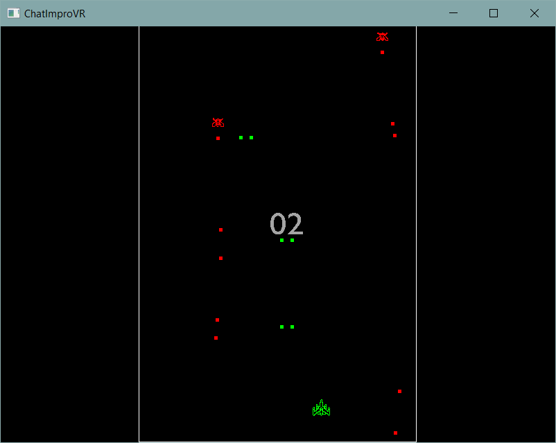
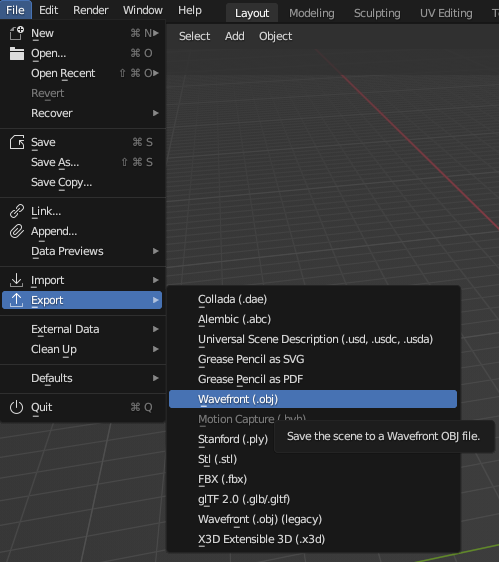
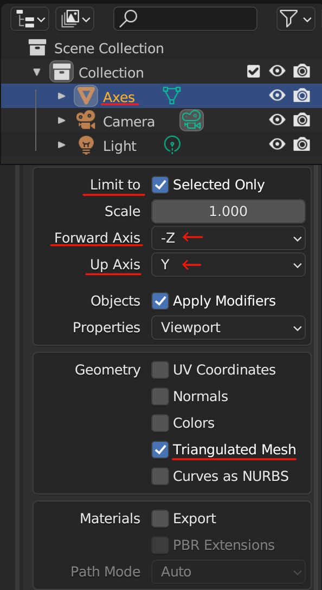

ChatImproVR

What is ChatImproVR?

ChatImproVR is a virtual world platform, with goals similar to that of VRChat, Neos, or SecondLife. A virtual world platform is a game engine and a set of tools to create and experience an immersive virtual space. These virtual spaces are then hosted online, where users can join them to socialize and enjoy the activities in the virtual world.
ChatImproVR will improve on existing virtual world platforms by promoting open source software and prioritizing user control over content, all while featuring excellent flexibility.
Who is ChatImproVR for?
Everyone! But to be more specific, we break down ChatImproVR users into two groups:
-
Developers: These are users who work with the backend of the engine. Writing code, implementing plugins, etc. If you are enthusiastic about Rust or developing your own game from scratch, chances are that you're in this developer category.
-
Player: Players use the "front end" of the engine. If you are content to put on the VR headset and just play the game without looking at the code too much, you're likely one of the players.
We want everyone to be able to use ChatImproVR for every aspect of the game experience-- from developing the game to playing it!
What does ChatImproVR do?
Primarily ChatImproVR is a game engine, but it might be a bit different from the game engines that you are used to, like Unity or Unreal. To break it down, ChatImproVR has a plugin-based architecture. This means that developers can use whatever parts of our engine that they would like, and even add their own features just as easily. The hope is that developers will share the features that they create for the engine, and open-source developers can build the engine together, instead of providing game builders with a front end and limited back end.
| ChatImproVR | Professional Game Engine | Typical VR Game | |
|---|---|---|---|
| Fully Open Source | ✔️ | ✔️ | ❌ |
| Can create games | ✔️ | ✔️ | ❌ |
| Visually-focused | ❌ | ✔️ | ✔️ |
| Can play games | ✔️ | ❌ | ✔️ |
| Plugin architecture | ✔️ | ❌ | ❌ |
| Code-oriented | ✔️ | ❌ | ❌ |
| Made in Rust | ✔️ | ❌ | ❌ |
Here are some examples of games that have been created with ChatImproVR so far:
 Demo Room
Demo Room
 Multiplayer
Multiplayer

Fluid Simulation
How do I get started? 
While this page serves as a product page, it also serves as the documentation page as well. The next section will cover the installation for the players.
However, if you are planning to do some plugin development or engine development (being as a developer), then we would recommend to check out in the Development Environment section.
If you are interested in the repository, check out here.
Where can I find help? 
You're pretty much there! The Book is the information hub of ChatImproVR. Here is where you can find How to make your first plugin, common issues and their fixes, or even the core concepts of what ChatImproVR is made of.
But just in case The Book doesn't have the help you need, you can also:
-
Refer to some of our example plugins
-
Report an issue in the ChatImproVR engine repository
-
Or, if all else fails, you can contact the devleopers directly:
| Developer Name | |
|---|---|
| Duncan Freeman | duncan.freeman1@gmail.com |
| Rudy Peralta | rudyperalta831@gmail.com |
| Kenneth Kang | gykang00@gmail.com |
| Grace Todd | grace.miriam.todd@gmail.com |
Installation
This section primarly focuses on installing our ChatImproVR engine.
Minimum Requirement
As of now, the engine operates on Windows, Mac, and Linux, but it only operates Windows System for VR.
At the same time, the engine has been tested on two seperate VR headsets: Oculus/Meta Quest and SteamVR.
If you are using a different system, please refer to this page for operating system updates. We will update this page as much as possible when additional support is provided.
While we said that it only works on Windows operating system for the two VR headsets, there is still hardware equipment.
When it comes to hardware requirements, your PC must able to support VR software. For example, the Oculus/Meta headset must need to connect the PC. (Trust us... our primary developers tested this on a weak laptop, and it says that it cannot run that application to connect the headset). Please make sure that the headset supported software is able to run and connect the headset.
Softwares to Download
There are two softwares to download: our engine and the VR connector app.
Our Engine
If you want to use the stable version, we recommend to downloading the engine from releases.
 .
.
If you are a Windows user, please download the .exe. If you are a Linux or Mac, please download the file that is stated in the release note (The application that has no extension). From there, you can either run the cimvr_server.exe to host your own server, or the cimvr_client.exe to connect server based on the address of the server.
If you want to use the most up-to-date with some minor bugs, check out the experimental version on the development environment page.
Oculus VR
Once you open the page, you will be greet the follow page as below.

Select the Download Oculus Rift Software button. By selecting the button will open an .exe. Please follow the installation instructions provided on the Oculus website.
Once you have completed the installation of the Oculus Rift Software, connect with your VR headset to the Computer using AirLink or cable connection.
Steam VR
Open the Download Link, and install the Steam VR application.
Development Environment Version
If you want to develop new plugins or engine features with a version that might have some bugs, but has more features than the stable version, then you can clone our repository from HERE. To use this version, there are a few additional steps that need to be completed:
Additional Software Download
There are two additional software to download to set up the development environment.
WASM target
Make sure you have the wasm32-unknown-unknown target installed;
rustup target add wasm32-unknown-unknown
Dependencies on Ubuntu:
sudo apt install build-essential cmake libxcb-render0-dev libxcb-shape0-dev libxcb-xfixes0-dev libspeechd-dev libxkbcommon-dev libssl-dev
Compilation
Build the client, server, and example plugins like so:
pushd server
cargo build --release
popd
pushd client
cargo build --release
cargo build --release --features vr # (For VR/OpenXR support)
popd
pushd example_plugins
./compile_all.sh # (Linux)
# ./compile_all.ps1 # (Windows)
popd
You can compile all of the example plugins with the compile_all.sh script.
If you're on windows, you can either use Git Bash to run the .sh files or open a PR; sorry about it!
While most crates are in a workspace, the client crate is unfortunately excluded due to an issue with the openxr crate.
Setting up the helper script
The helper script is intended to make it easy to run the client, server, or both from a single command. The script requires Python 3.
On Linux/Unix/MacOS (Bash)
If your MacOS system is using bash instead of zsh, then please follow this procedure. Otherwise, please follow the MacOS (Zsh) section.
Assuming you have a copy of chatimprovr somewhere (in this case, $HOME/Projects/chatimprovr), you can put the following in your ~/.bashrc:
function cimvr() {
$HOME/Projects/chatimprovr/cimvr.py $@
}
This will allow you to access the script as cimvr anywhere.
NOTE: If you do not have the .bashrc file, you need to create on in the $HOME directory.
On MacOS (Zsh)
Assuming you have a copy of chatimprovr somewhere (in this case, $HOME/Desktop/Rust/chatimprovr), you can put the following in your ~/.zshrc:
function cimvr() {
$HOME/Desktop/Rust/chatimprovr/cimvr.py $@
}
This will allow you to access the script as cimvr anywhere.
NOTE: If you do not have the .zshrc file, you need to create on in the $HOME directory.
On Windows
Assuming you have a copy of chatimprovr somewhere (in this case, C:\Users\dunca\Documents\chatimprovr), you can put the following in your Microsoft.PowerShell_profile.ps1.
function cimvr() {
$cimvr_path="C:\Users\dunca\Documents\chatimprovr"
python $cimvr_path\cimvr.py $args
}
This will allow you to access the script as cimvr anywhere.
NOTE: If you cannot find the
Microsoft.PowerShell_profile.ps1, you can find the file by typing$profilein Windows PowerShell. There is a chance thatMicrosoft.PowerShell_profile.ps1might not exist yet. In that case, you need to create a new file and the directory to match that path. In the image below, the file should be located inDocuments\WindowsPowerShellunder the file name asMicrosoft.PowerShell_profile.ps1. If running scripts is disabled on your machine, consult the common fixes section.

Using the script to launch the engine
After building both chatimprovr's client and server as well as the example plugins, we could launch the cube example included with ChatImproVR using:
cimvr camera cube
in the terminal where you installed the helper script.
Additional Tips and Tricks
Sparse registries
Recently, the sparse protocol for cargo registries was stablized. This can help improve initial compile times. See the rust blog.
Logging
Wasmtime/Cranelift puts a bunch of junk in the log by default. To disable this, put the following in your RC file:
export RUST_LOG="debug,cranelift=OFF,wasmtime=OFF"
How does ChatImproVR work?
ChatImproVR is based on plugins. Plugins run on both the Client and the Server. Each plugin adds functionality to the virtual world by providing a number of Systems.
We refer to the Client or the Server a Plugin is running on as the "Host". Systems communicate with the Host via Channels and via the Entity Component System (ECS).
The Host can communicate with external APIs, and with the Remote. From the Client's perspective, the Remote is the Server. From the Server's perspective, the Remotes are the connected Clients.
Channels
Channels are modeled after the familiar Pub/Sub pattern. Systems subscribe to Channels, and receive Messages via their Inbox. Each Channel is referred to by it's Unique ID. This ID corresponds to exactly one responsibility and associated datatype. If the underlying datatype changes, the ID must also change. This is to ensure compatability between plugins. Otherwise, plugins may consume corrupted data.
Each channel is either Local or Remote. The Local Channels can only send Messages within their Host. Conversely, Remote Channels can only send messages to the Remote. This is to help avoid confusion as to where a message might have originated, and to make optimizing communication easier.
Entity Component System
ChatImproVR's ECS is very similar to other game engines' architectures (Bevy being a notable example). Essentially, the ECS acts as a global database, where Entities are simply keys and Components are sparsely populated columns in the metaphorical database. Systems make Queries to the ECS, which are usually joining one more more Components.
Each Host has it's own ECS. The Server's ECS is intended to contain the state of the world, while the Client's ECS' are intended to contain snapshots of the world and locally visible objects such as graphical user interfaces and markers, as well as predictions of motion or action.
One important difference from other engines is that ChatImproVR handles Components via their Unique ID, instead of by their datatype. Just like Channels, If the underlying datatype changes, the ID must also change. Another important difference is that Entities are intended to be universally unique. This means that Entities could be transferred between Servers, so items in the virtual world can be transferred throughout the metaverse.
Scheduling
Execution of Systems on each Host is broken up into a number of Stages. Currently, the following stages are available (listed in order of execution):
- Init: Executed once, right after the plugin is initialized.
- Pre-Update: Executed before each update, once per Frame.
- Update: Executed once per Frame.
- Post-Update: Executed after each update, once per Frame.
Synchronization
There is a special Sychronized component which, if attached to an Entity on the Server, will cause the entire Entity and all of it's Components to be copied to the Clients's ECS. This mechanism is intended to make it very easy to create content which is visible to all Clients immediately.
Expect this synchronization to be optimized, so that updates may not be immediate.
In the future, we may offer lazy/immediate/streamed variants of this component.
Plugins
One of the most important features behind the engine is the ability to develop a plugin. Plugins have the ability to talk to other plugins, and the host. Plugins implement game logic.
Plugins are split into Client and Server sides. This acheived in code like so:
#![allow(unused)] fn main() { // Declare structures containing state // Note that the names do not matter, but are informative // make_app_state!() only cares about the order of it's arguments struct ServerState; struct ClientState; // Expose the these structures to the engine. Order matters! // This is analogous to main() in a regular Rust program. make_app_state!(ClientState, ServerState); // Implement constructors impl UserState for ClientState { fn new(io: &mut EngineIo, sched: &mut EngineSchedule<Self>) -> Self { Self } } impl UserState for ServerState { fn new(io: &mut EngineIo, sched: &mut EngineSchedule<Self>) -> Self { Self } } }
While both the server and client states are declared in the same plugin, only one will be picked at runtime. The client-side code runs independently on each client, and the server-side code runs in a single instance on the server.
ChatImproVR plugins are written in WebAssembly. See the next section for details!
Tips and tricks
If you are implementing a plugin which will behave the same on the client and server, you may use a type alias to avoid duplicating code:
#![allow(unused)] fn main() { // Implement your plugin state as usual struct PluginState; impl UserState for PluginState { // ... } // Use a type alias to create an alternate name for the state in order to pass both to make_app_state!() without causing an error type ServerState = PluginState; make_app_state!(PluginState, ServerState); //make_app_state!(PluginState, PluginState); // This would cause an error! }
WebAssembly
What is WebAssembly?
WebAssembly (WASM for short) provides a sandboxed environment in which programs written in a variety of languages can interface with a host application. WASM is intended to provide a platform-agnostic and performant alternative to native code.
Limitations and features
Here we will go over some important aspects of working with WebAssembly in Rust. Firstly, that the standard library is available. Kind of. In general, functions of the stdlib that communicate with the outside world will not work; this includes but is not limited to: system time, files, sockets. Instead, one must rely on the interfaces provided by ChatImproVR. One exception to this rule is that allocation does work; one can allocate memory with reckless abandon, at least up to 4 GB.
Tips and tricks
Including content
If you need to include content with your plugin (e.g. models and textures), you may use the include_bytes!() macro provided in the standard library to embed these files in your WASM binary. For more advanced use-cases, consider the include dir crate.
Details
We use the wasm32-unknown-unknown target.
Entity Component System
For general information on the ECS architecture, we recommend looking at Wikipedia.
This article contains information specific to ChatImproVR's ECS, and some of the specific features it has.
Entities
Entities in ChatImproVR are universally unique IDs. As of this writing, this isn't necessarily true in practice, but entities are intended to be treated this way. The point of making universally unique entity IDs is that entities can be transferred client and server, and even between servers without having to worry about collisions.
Entities are created and deleted plugin-side like so:
#![allow(unused)] fn main() { let my_entity = io.create_entity() .add_component(Transform::identity()) .build(); io.remove_entity(my_entity); }
Components
Components in ChatImproVR are identified by their unique ID and by their (maximum) size. This unique ID corresponds to one and only one data schema. If the component data type changes, one must also change the ID of the component to avoid corrupting data for potentially reliant third party plugins. One of the less ergonomic aspects of ChatImproVR's current implementation is that components are fixed-size. This means that a component must serialize to a data length less than or equal to the size prescribed in its ID. The reason for this is that it makes manipulating components in memory much easier, and necessitates the association of a data type with its (fixed) size.
New components data types are declared like so:
#![allow(unused)] fn main() { /// Component datatype /// Implements Serialize and Deserialize, making it compatible with the Component trait. #[derive(Serialize, Deserialize, Clone, Copy, Debug)] struct MyComponent { a: i32, b: f32, } impl Component for MyComponent { // Here we define the universally unique name for this component. // Note that this macro simply concatenates the package name with the name you provide. // We could have written "channels_example/MyMessage" or even "jdasjdlfkjasdjfk" instead. // It's important to make sure your package name is UNIQUE if you use this macro. const ID: &'static str = pkg_namespace!("MyComponent"); } }
We can take a shortcut! The Component derive macro does this all automatically!
#![allow(unused)] fn main() { #[derive(Component, Serialize, Deserialize, Clone, Copy, Debug)] struct MyComponent { a: i32, b: f32, } }
Components may be added to an entity plugin-side:
#![allow(unused)] fn main() { io.add_component(ent, &MyComponent { a: 0, b: 0.0 }); }
Components on an existing entity may be modified by calling the function above, or by modifying them within a query:
#![allow(unused)] fn main() { for entity in query.iter() { query.write( entity, &MyComponent { a: 1., b: 2312.0, }, ); } }
Systems
Systems in ChatImproVR are contained within WebAssembly plugins. Each system corresponds to exactly one ECS query, so that one sets up a System by specifying which components it is associated with. Systems are executed in stages; the Init stage is called when a plugin is initialized, and each frame the PreUpdate, Update, and PostUpdate stages are executed in sequence.
Systems always have the following function signature:
#![allow(unused)] fn main() { fn my_system(&mut self, io: &mut EngineIo, query: &mut QueryResult) {} }
Systems are in the plugin's constructor:
#![allow(unused)] fn main() { sched.add_system(Self::update) .stage(Stage::Update) .query( "Query Name", Query::new() .intersect::<MyComponent>(Access::Write) .intersect::<MyAnotherComponent>(Access::Read) ) .build(); }
See the ECS example for more details.
Pub/Sub channels
ChatImproVR uses the Publish-Subscribe pattern.
Receiving messages
Each System subscribes to a number of channels:
#![allow(unused)] fn main() { // Schedule the update() system to run every Update, // and allow it to receive the MyMessage message sched.add_system(Self::update) .stage(Stage::Update) .subscribe::<MyMessage>() .build(); }
Here we have subscribed to the MyMessage, which will be read every Update when update() is called.
We can read messages from within the system like so:
#![allow(unused)] fn main() { fn update(&mut self, io: &mut EngineIo, _query: &mut QueryResult) { // Dump the message to the console for msg in io.inbox::<MyMessage>() { dbg!(msg); } } }
Server-side, we can get some additional information per-message:
#![allow(unused)] fn main() { fn update(&mut self, io: &mut EngineIo, _query: &mut QueryResult) { // Dump both the message AND the client that sent the message to the console. // This is only relevant for servers! for (client, msg) in io.inbox_clients::<MyMessage>() { dbg!((client, msg)); } } }
Sending messages
Suppose MyMessage has the following type:
#![allow(unused)] fn main() { #[derive(Serialize, Deserialize, Debug)] struct MyMessage { a: i32, b: f32, } }
Note that we derive the
SerializeandDeserializetraits.
We can send the message using the io.send() function:
#![allow(unused)] fn main() { io.send(&MyMessage { a: 9001, b: 1337.0, }); }
Just as we can receive messages with their client IDs on the server, we can also send messages to specific client IDs from the server:
#![allow(unused)] fn main() { io.send_to_client(&msg, client.id); }
Here we might have obtained client.id from the Connections [message](TODO: LINK ME TO THE API DOCS!).
Defining message types
We need to give our message a universally unique name.
#![allow(unused)] fn main() { impl Message for MyMessage { const CHANNEL: ChannelIdStatic = ChannelIdStatic { // Here we define the universally unique name for this message. // Note that this macro simply concatenates the package name with the name you provide. // We could have written "channels_example/MyMessage" or even "jdasjdlfkjasdjfk" instead. // It's important to make sure your package name is UNIQUE if you use this macro. id: pkg_namespace!("MyMessage"), // Sent to server locality: Locality::Remote, }; } }
Note how we have specified the Locality of this message type. Local messages are sent to other plugins on this host. Remote messages are sent to the remote host. For example, a Remote message sent from a client would be received only at the server.
We can take a shortcut! The Message derive macro does this all automatically!
#![allow(unused)] fn main() { #[derive(Message, Serialize, Deserialize, Debug)] #[locality("Remote")] struct MyMessage { a: i32, b: f32, } }
Remote communication
All Remote messages are sent at the end of each frame.

See the channels example.
Local communication:
Messages are sent between stages, not within stages. Messages may only be received once:

Messages may be sent and received each stage, even to the stage on the next frame:

Messages are broadcasted to all subscribing plugins, including your own plugin:

Systems' order of execution is the same as the order in which they were declared:

Client and Server
The client and server play very different roles in plugin developement. Deciding which code belongs server-side and which code belongs client-side can be challenging.
A simple description of the difference in semantics between client and server, is that changes made client-side will only be visible for that client, and changes made server-side can be made visible to all connected clients.
For example, let say that a user presses the left key to move an object to the left. If we want that behavior to only be visible for that user, then that code should be part of the client side and we do not need to send a message to the server to change the object. However, if the user wants to move an object which is visible to everyone else in the server, then that movement behavior should happen server-side; The client will send a command to the server requesting that the object must move left.
Therefore, it is worth thinking about the desired behaviors first; If you are planning to develop a plugin that multiple users will interact at the same time, then it is recommended to develop the bahavior of the event on the server-side. If you are planning to develop a story mode game, for example, that only one user will interect with other objects, developing the code client side would make sense and likely result in simpler code.
Update cycles and the Synchronized component
Many applications in ChatImproVR will have a structure like this:

We explain each step in this process below:
- On initialization, the client-side plugin uploads mesh data to the render engine, in preperation for the cycle. Note that this will not show anything on screen, because there is no entity in the client-side ECS yet.
- The client-side plugin receives an input event describing e.g. a key press.
- The client-side plugin processes the event, and sends a corresponding message (a movement command) to the server-side plugin.
- The server-side plugin processes the movement command and writes to the server-side ECS database. Note that the entity it writes includes a Render Component and a position, which describe which mesh to render and where it should be displayed in the world. Critically, the entity also includes the
Synchronizedcomponent, which instructs the server to perform the next step: - The ECS data on the server is copied to the client-side ECS. Any existing components attatched the corresponding entity client-side will be overwritten. This process is called Synchronization, and it happens automatically for entities which include the
Synchronizedcomponent. - The render engine queries the client-side ECS database, and displays the entity.
The responsibilities of the Plugin are as follows:
- Client-side
- Upload mesh data
- Receive input events
- Publish movement commands corresponding to input events
- Server-side
- Receive movement commands and update the ECS accordingly
Crates
The following dependency graph illustrates how the crates in ChatImproVR are laid out:

Most notably, plugins depend on both cimvr_common and on cimvr_engine_interface.
The crates in ChatImproVR are as follows:
client: Client application, provides rendering, input, and other user interfacingserver: Server application, a headless serviceengine: WASM Plugin, ECS, and messaging layer for use in implementing server and clientengine_interface: Engine interface for use within e.g. pluginscommon: Interfacing data types between provided plugin, client, and server e.g. position component
Names
In order to communicate between plugins, we need some sort of naming scheme for data types. This naming scheme should be unambigious. We should allow plugins to be designed to use interfaces rather than talk exclusively with just one implementation or provider.
We use strings to identify resources (read: Component and Message datatypes) in ChatImproVR. The convention is to use the pattern MyNamespace/MyResourceName. We provide the pkg_namespace!() macro to automatically prepend your package/crate's name to the given name, allowing you to easily define resource names within the context of your plugin.
Great care should be taken to ensure that the resource name is Universally Unique.
One and only one data format can be associated with a resource name. If the data format of a resource changes, then a new name must be picked. This is to ensure dependent plugins will not consume garbled data. ChatImproVR does not use a self-describing data format (for efficiency), so collisions can cause data to appear corrupted from the consumer's point of view.
Coordinate system
Rendering
The rendering interface in ChatImproVR works as follows:
- Plugins define a
MeshHandle, which is just a name for the mesh we will upload. This name will be used in theRendercomponent.
#![allow(unused)] fn main() { const CUBE_HANDLE: MeshHandle = MeshHandle::new(pkg_namespace!("Cube")); }
- Plugins send an
UploadMeshmessage containing theMeshHandleand the desired mesh data. This tells the rendering engine about the mesh data, so that we may later reference it by itsMeshHandle.
#![allow(unused)] fn main() { io.send(&UploadMesh { mesh: cube(), id: CUBE_HANDLE, }); }
- To render a mesh, create an entity with the
TransformandRendercomponents. TheTransformcomponent specifies the position and orientation of the rendered mesh. This is available in shaders via themat4 viewuniform. TheRendercomponent specifies how the mesh is to be displayed; e.g. which primitive to use, indexing limites, etc. Note how we specify whichMeshHandleto render!
#![allow(unused)] fn main() { io.create_entity() .add_component(Transform::identity()); .add_component(Render::new(CUBE_HANDLE)) .build(); }
NOTE: All rendering data is processed client-side; e.g. UploadMesh should be sent in ClientState.
See the cube example!
Defining meshes
Meshes are defined using vertices and indices. The default shader uses Vertex's uvw field to represent vertex color.
API documentation
The two main crates for plugin interfacing are engine_interface and common.
These two have some API documentation written; you can currently access them by running cargo doc --open in either of their directories in chatimprovr
Beginner Plugin Development Tutorial
In this section, we will go over the basic understanding of plugin development (for beginners). This tutorial will go in depth with strong example codes and explaination of the meaning the syntax.
It's assumed that you have read through the Core Concepts section.
By following this tutorial, you will able to create a knock-off version of Galaga. The final version can be found in this repository. The complete game view we be something similar as the image below.

Any beginner with some background of Rust language should be able to follow this tutorial without any issue. If you need some help getting set up with Rust, you can refer to the Rust Book.
Setting up Plugin Development Environment
Plugins are typically developed in their own repositories or folders, separate from the engine repository.
Before plugin development
Before we start doing any plugin development, you need to set up the engine on your machine. Please refer to the Installation and Development Environment to set up the development environment before proceeding.
Using the template
The easiest way to get started with a new plugin is to use the plugin template repository.

If you're using another git service besides github, you can clone the repository and remove the default remote:
git clone git@github.com:ChatImproVR/template.git
cd template
git remote remove origin
Modifying the helper script
We need to update the plugin path to match the path on your personal machine. For the next section, we will help you out how to modify the helper script based on each terminal.
Note that all the additional change is inserting line(s) outside of the
cimvrfunction call.
On Linux/Unix/MacOS (Bash)
let's say we want to develop a plugin called foo, that we're developing at $HOME/Projects/foo. Then we could add this to our ~/.bashrc:
export CIMVR_PLUGINS="$HOME/Projects/foo"
If you are developing on several plugins at the same time, for example foo and poo and foo is located in the $HOME/Projects/foo whereas the poo is located in the $HOME/Desktop/foo, then it will be seperated by the ; sign.
export CIMVR_PLUGINS="$HOME/Projects/foo;$HOME/Desktop/poo"
On MacOS (Zsh)
let's say we want to develop a plugin called foo, that we're developing at $HOME/Desktop/Rust/foo. Then we could add this to our ~/.bashrc
export CIMVR_PLUGINS="$HOME/Desktop/Rust/foo"
If you are developing on several plugins at the same time, for example foo and poo and foo is located in the $HOME/Projects/foo whereas the poo is located in the $HOME/Desktop/foo, then it will be seperated by the ; sign.
export CIMVR_PLUGINS="$HOME/Desktop/Rust/foo;$HOME/Desktop/poo"
On Windows
Let's say we want to develop a plugin called foo, that we're developing at C:\Users\dunca\Documents\Projects\foo. Then we could add this to our $profile:
$Env:CIMVR_PLUGINS="C:\Users\dunca\Documents\Projects\foo"
If you are developing on several plugins at the same time, for example foo and poo and foo is located in the C:\Users\dunca\Documents\Projects\foo whereas the poo is located in the C:\Users\Mr.Kangs\Desktop\poo, then it will be seperated by the ; sign.
export CIMVR_PLUGINS="C:\Users\dunca\Documents\Projects\foo;C:\Users\Mr.Kangs\Desktop\galaga"
Using the script to launch plugins
cimvr foo
This will start the client and the server with our plugin as arguments. Note that this name foo is determined via package name, the one we set earlier.
The CIMVR_PLUGINS environment variable is a semicolon-seperated list of search paths. We've set it to the path of the plugin under our own plugin, so that it can find foo.wasm.
Note that the
example_pluginsdirectory will be looked for by default, so you don't need to add an environment variable for these.
Tips and tricks
Using the cargo-watch crate
Running e.g. cargo watch -x 'build --release' in your plugin's root will compile it automatically when you save the source. In turn, the engine will reload your plugin automatically. This means you can effectively save source or assets and see the result immediately!
Plugin Template
Before we start getting creative with plugin development, lets dive deep into the code to gain a better understanding of what is going on.
Plugin File Structure
The following list is the file structure of the plugin template:
.cargoconfig.toml
srclib.rs
.gitignoreCargo.tomlREADME.md
New rust developers will be primarily familiar with developing code in main.rs, however plugins are a bit different. Plugins are libraries, so we write code starting from lib.rs instead.
Before we get into the code itself, there is one thing we need to change. This information can be found in the README.md file, but we will go over it here as well.
Update Cargo.toml file
Because this code is a template, the code is not fully setup for development. Inside the Cargo.toml file, you will find the following code:
[package]
name = "template_plugin" # CHANGE ME!
version = "0.1.0"
edition = "2021"
[lib]
crate-type = ["cdylib"]
[dependencies] # IMPORTANT!
cimvr_common = { git = "https://github.com/ChatImproVR/chatimprovr.git", branch = "main" }
cimvr_engine_interface = { git = "https://github.com/ChatImproVR/chatimprovr.git", branch = "main" }
serde = { version = "1", features = ["derive"] }
We need to change the name of the plugin. In this tutorial, it will be galaga. If we decide not change the name, the plugin will be compiled as template_plugin.wasm. Not only that, but the name will become important later when we use the pkg_namespace!() macro! Make sure to pick something descriptive, unique, and long.
Note that in the future, ChatImproVR may be available on crates.io or change it's name in git, in which case you will need to update the [dependencies] section!
Therefore, if we are creating the galaga plugin, Cargo.toml should look like:
[package]
name = "galaga"
version = "0.1.0"
edition = "2021"
[lib]
crate-type = ["cdylib"]
[dependencies]
cimvr_common = { git = "https://github.com/ChatImproVR/chatimprovr.git", branch = "main" }
cimvr_engine_interface = { git = "https://github.com/ChatImproVR/chatimprovr.git", branch = "main" }
serde = { version = "1", features = ["derive"] }
Understanding lib.rs
Let's switch to the main component, lib.rs. The following code should look similar to lib.rs you have.
#![allow(unused)] fn main() { use cimvr_engine_interface::{make_app_state, prelude::*, println}; // All state associated with client-side behaviour struct ClientState; impl UserState for ClientState { // Implement a constructor fn new(io: &mut EngineIo, sched: &mut EngineSchedule<Self>) -> Self { println!("Hello, client!"); // NOTE: We are using the println defined by cimvr_engine_interface here, NOT the standard library! cimvr_engine_interface::println!("This prints"); std::println!("But this doesn't"); Self } } // All state associated with server-side behaviour struct ServerState; impl UserState for ServerState { // Implement a constructor fn new(io: &mut EngineIo, sched: &mut EngineSchedule<Self>) -> Self { println!("Hello, server!"); Self } } // Defines entry points for the engine to hook into. // Calls new() for the appropriate state. make_app_state!(ClientState, ServerState); }
Let's go every line in detail what it means in general.
Packages
#![allow(unused)] fn main() { use cimvr_engine_interface::{make_app_state, prelude::*, println}; }
The cimvr_engine_interface facilitates communication between the plugin and the host. It does not include any interfacing with the specific features of the client or server; instead these datatyes are relegated to the common crate. The third line does not print out since it is part of the standard library that cimvr is not using. In simple terms, the cimvr_engine_interface is the connector between plugins and the engine itself.
#![allow(unused)] fn main() { make_app_state!(ClientState, ServerState); }
The make_app_state! will run and compile the plugin code. In other words, it is the main function of the plugin in order to load into the engine itself.
Client
If you are not familiar with the idea of Client versus Server, please refer to this page before continue reading this part of the code. At the same time, the implementation utilize the idea of ECS. If you are not familiar with ECS, please refer to this page.
Before we start implemeting the feature/functionality to the client, we need to declare the client entity. Because there are no required parameter to attached with the client, it will be an empty struct with the name of ClientState. The line below is the method how we will declare it.
#![allow(unused)] fn main() { struct ClientState; }
Now we are going to implement the client side feature/functionality by implementing the idea of UserState. The UserState is define as below.
#![allow(unused)] fn main() { pub trait UserState: Sized { /// Constructor for this state; called once before the **Init** stage. fn new(io: &mut EngineIo, sched: &mut EngineSchedule<Self>) -> Self; } }
All we need to do is to modify the new function with the same parameter. If we want to add more features that correlates to the client side, we can create other functions that are directly implemented to the ClientState entity, but we will walk over when adding behavior to objects and such. At the same time, we will talk more detail regarding the parameter of the new function.
Within the new function, the template contains the following code.
#![allow(unused)] fn main() { println!("Hello, client!"); // Line 1 cimvr_engine_interface::println!("This prints"); // Line 2 std::println!("But this doesn't"); // Line 3 Self // Line 4 }
The first line will print out in the terminal as how any Rust language will print out: the standard println! statement.
The second line will print out in the terminal but differently. While the first line prints out on the terminal/client side, the second line prints the text on the engine side itself.
The last line is the returning the client UserState as the updated the version for the client.
Which makes up the entire code for the client side itself.
#![allow(unused)] fn main() { impl UserState for ClientState { // Implement a constructor fn new(io: &mut EngineIo, sched: &mut EngineSchedule<Self>) -> Self { println!("Hello, client!"); // NOTE: We are using the println defined by cimvr_engine_interface here, NOT the standard library! cimvr_engine_interface::println!("This prints"); std::println!("But this doesn't"); Self } } }
Server
If you are not familiar with the idea of Client versus Server, please refer to this page before continue reading this part of the code. At the same time, the implementation utilize the idea of ECS. If you are not familiar with ECS, please refer to this page.
If you have read the client section, the server side present the same idea itself: printing out on the terminal.
#![allow(unused)] fn main() { // All state associated with server-side behaviour struct ServerState; impl UserState for ServerState { // Implement a constructor fn new(io: &mut EngineIo, sched: &mut EngineSchedule<Self>) -> Self { println!("Hello, server!"); Self } } }
In conclusion, the template prints out text in the terminal for both client and server side. In the next section, we will discuss on how to create object in the space and focus on creating both 3D and 2D objects.
Creating Objects
Without any objects in the environment, we cannot do anything with it. Now we have our plugin template, let's start working on object creation.
Review
Before we start adding code to the plugin, review what an ECS is by referring to this page. In short, we need to have a unique ID for each object that is associated with each graphic itself.
Adding packages/libraries/crates
Insert the following packages/libraries/crates (we will call them crates for now on) into the very top of lib.rs file.
#![allow(unused)] fn main() { use cimvr_engine_interface::{make_app_state, prelude::*, pkg_namespace}; use cimvr_common::{ glam::{EulerRot, Quat, Vec3}, render::{Mesh, MeshHandle, Primitive, Render, UploadMesh, Vertex}, Transform, }; }
Some of the crates will be familiar from the plugin template such as make_app_state or prelude::*. Here is a brief summary on the remaining crates.
pkg_namespace: This allows us to easily and uniquely name component and message data types based on our crate's (plugin's) name.cimvr_common: The main crate that handles communcation between server and client.render: The main crate for object loading part (the main itself explains that it will render graphics)Mesh: This will contain both vertices and indices: This will be important later on the object creation part.MeshHandle: This handle refers to a mesh without containing its dataPrimitive: This will describe the method of rendering the object: This is important when it comes to object creation.Render: This component is the most important for rendering; it tells the rendering engine how to render the givenMeshHandle.UploadMesh: This will send the mesh to the client.Vertex: It contains the coordinates and rgb value and/or texture coordinates for a given vertex.
Transform: The will set the position and orientation of the object.
Create ID For Each Object
First, we need to declare the MeshHandle to assign each ID for each object. In the game of Galaga, we need to assign four parts: player, enemy, player's bullet, and enemy's bullet.
We can set up the ID values like the following.
#![allow(unused)] fn main() { const PLAYER_HANDLE : MeshHandle = MeshHandle::new(pkg_namespace!("Player")); const ENEMY_HANDLE : MeshHandle = MeshHandle::new(pkg_namespace!("Enemy")); const PLAYER_BULLET_HANDLE : MeshHandle = MeshHandle::new(pkg_namespace!("Player Bullet")); const ENEMY_BULLET_HANDLE : MeshHandle = MeshHandle::new(pkg_namespace!("Enemy Bullet")); }
Each line represents the ID for each entity/object. We will declare a constant value that it is a MeshHandle with the name holder of the object using the pkg_namespace.
These variables should not be declared in ServerState nor ClientState.
Setting up the Mesh for Each Object
Now that we have declare the MeshHandle, we need to create the Mesh itself, or the object itself.
If you want to use Blender to create an object and upload that as a mesh into the plugin, please refer the Blender section of this tutorial.
Let's start making the player object itself. Our design, since it is a basic model, will be a square for the player. First, we declare a function that returns a Mesh type.
#![allow(unused)] fn main() { fn player() -> Mesh {} }
Inside the function, we need to define how big we want to be. For now, let's define the size variable inside the player function as 5.0.
#![allow(unused)] fn main() { fn player() -> Mesh { let size = 5.0; } }
Inside a mesh, there is vertices and indices that we need to define and return. Let's take a look at the Vertex data type.
#![allow(unused)] fn main() { pub struct Vertex { /// Local position pub pos: [f32; 3], /// Either u, v, w for textures or r, g, b for colors pub uvw: [f32; 3], } }
From this point, we will deviate into two sections: 2D and 3D. First we will cover the 2D section. If you want to get information regarding 3D, please refer to this section, but we highly recommend to read the 2D section first.
2D
As you see above, the Vertex takes [x,y,z] position and [r,g,b] color combination. The word vertex means a point. We are poviding the point value of the object. Because we decided to make the player as a sqaure rather than fancy object looking, it can define as the following.
#![allow(unused)] fn main() { let vertices = vec![ Vertex::new([-size, -size, 0.0], [0.0, 0.0, 1.0]), // Vertex 0 Vertex::new([size, -size, 0.0], [0.0, 0.0, 1.0]), // Vertex 1 Vertex::new([size, size, 0.0], [0.0, 0.0, 1.0]), // Vertex 2 Vertex::new([-size, size, 0.0], [0.0, 0.0, 1.0]), // Vertex 3 ]; }
The variable vertices is vector that contains several vertext of the object itself.
Inside the first Vertex variable, the first array is define as the position of the vertex location whereas the second array is the rgb value. Since we define the value size previously, we can use the value in the x and y value. We are not creating a 3D galaga game, which there is no need to insert a z value. Therefore, the z value is 0.0 rather than some other numerical value.
For the rgb value, we are using the scale between 0.0 to 1.0 rather than the traditional of 0 to 255. If you want to get the exact value of the rgb value based on the scale between 0 to 255, you can simply do the value desire over 255. For example, if you want to have a certain red value (like 200), the math will be 200/255 which results to 0.7843137255. In this case, we are setting the player object as blue.
Now let's switch our focus to the indices. We need to place the vertex by following the Right Hand Rule. For people who do not know what is the Right Hand Rule, it can be explain the image below.

Let's say the green arrow represents the x-axis, the blue arrow represents the y-axis, and the red arrow represents the z-axis. If we place the vertex in the counter clockwise order for both x and y values, then the z value will be positive that will be facing us. If we place the order of the vertex in the opposite order/ clockwise, then it will face down. Since we want to place the object facing toward us, we need to place the vertices in the counter clockwise order.
Therefore, the indices variable will be define as below.
#![allow(unused)] fn main() { let indices: Vec<u32> = vec![0,1,2,2,3,0]; }
The 0, 1, 2, 3 came from the Vertex 0, Vertex 1, Vertex 2, and Vertex 3 that is describe above. Vertex 0 is the bottom left corner; Vertex 1 is the bottom right corner; Vertex 2 is upper right corner; and Vertex 3 is the upper left corner of the square.
Here is an example drawing on how it will be displayed.

Lastly, we need to return the value of Mesh type as the following.
#![allow(unused)] fn main() { Mesh {vertices, indices} }
Therefore the complete version of the player mesh function will be define as following.
#![allow(unused)] fn main() { fn player() -> Mesh { let size: f32 = 5.0; let vertices = vec![ Vertex::new([-size, -size, 0.0], [0.0, 0.0, 1.0]), // Vertex 0 Vertex::new([size, -size, 0.0], [0.0, 0.0, 1.0]), // Vertex 1 Vertex::new([size, size, 0.0], [0.0, 0.0, 1.0]), // Vertex 2 Vertex::new([-size, size, 0.0], [0.0, 0.0, 1.0]), // Vertex 3 ]; let indices: Vec<u32> = vec![0,1,2,2,3,0]; Mesh {vertices, indices} } }
For each object, we need to the followng for the remaining enemy. enemy's bullet, and player's bullet. If you want to learn more depth regarding drawing objects, here is a great resource to refer.
3D
With the same approach as creating 2D objects, we need to increase more vertex and identify which indices will connect to which indices. The following code will make a cube instead of a sqaure.
#![allow(unused)] fn main() { /// Defines the mesh data fro a cube fn cube() -> Mesh { // Size of the cube mesh let size = 0.25; // List of vertex positions and colors let vertices = vec![ Vertex::new([-size, -size, -size], [0.0, 1.0, 1.0]), Vertex::new([size, -size, -size], [1.0, 0.0, 1.0]), Vertex::new([size, size, -size], [1.0, 1.0, 0.0]), Vertex::new([-size, size, -size], [0.0, 1.0, 1.0]), Vertex::new([-size, -size, size], [1.0, 0.0, 1.0]), Vertex::new([size, -size, size], [1.0, 1.0, 0.0]), Vertex::new([size, size, size], [0.0, 1.0, 1.0]), Vertex::new([-size, size, size], [1.0, 0.0, 1.0]), ]; // Each 3 indices (indexing into vertices) define a triangle let indices = vec![ 3, 1, 0, 2, 1, 3, 2, 5, 1, 6, 5, 2, 6, 4, 5, 7, 4, 6, 7, 0, 4, 3, 0, 7, 7, 2, 3, 6, 2, 7, 0, 5, 4, 1, 5, 0, ]; Mesh { vertices, indices } } }
Sending the Mesh from Client to Server
Once we have generated the Mesh for each object with the correct Render ID, we need to send that Mesh with the correct ID to the server. Inside the new function below, we need to insert the following command.
#![allow(unused)] fn main() { io.send(&UploadMesh{ id: PLAYER_HANDLE, mesh: player(), }); }
Let's take a deep look into this command itself.
The command will send to the EngineIo as a UploadMesh struct that contains the Render ID and the mesh itself. We know both of the id (PLAYER_HANDLE) and the mesh (player()).
That is all for sending mesh from the client to the server. Pretty easy. The complete code will be looking similar below. This implementation is inside the ClientState new function.
#![allow(unused)] fn main() { fn new(io: &mut EngineIo, sched: &mut EngineSchedule<Self>) -> Self { io.send(&UploadMesh{ id: PLAYER_HANDLE, mesh: player(), }); Self } }
You do the same process for all the remaining objects such as the enemy, enemy_bullets, and the player_bullets.
Blender
While using Mesh is great by declearing a type and modify from there, it is very limited to the extend of creating more unique objects. Therefore, we have a different method to implement mesh into the plugin using Blender!
The object loader is already part of CimVR that we just need to update the Cargo.toml file. Inside the Cargo.toml file of your plugin, add a new line under dependencies.
#![allow(unused)] fn main() { obj_reader = {path = "../chatimprovr/obj_loader"} // The path might look different }
You can declare whatever you want, but make sure the path is located in the right file that will read the file.
Once that is complete, you need to use that crate to load the function obj_lines_to_mesh.
At the beginning of the lib.rs file where you declare crates, add the following line.
#![allow(unused)] fn main() { // Add libraries from the obj_reader crate use obj_reader::obj::obj_lines_to_mesh; // If you name the dependency differently, then change the name accordingly }
Differences between Blender and ChatImproVR
The biggest differences between Blender and ChatImproVR is axes are different. Take a look at the following image below.
The color lines represent axes in ChatImproVR whereas the solid white lines with the labels for each axes represent the axes in Blender. For people who are not familiar with the color line axes representation, here is a summary about it.
- Red Line represents the X-axis
- Green Line represents the Y-axis
- Blue Line represents the Z-axis
- The Solid Lines represent positive direction
- The Dotted Lines represent negative direction
As you see, the blender axes does not match with the ChatImproVR axes; for example, the Y-axis for blender is on the Z-axis for ChatImproVR. Therefore, we need to make sure to export the object correctly so that we do not need to modify the object viewing inside the code (In this tutorial, we had to modify to show other features; hence, we highly recommed to follow this section.)
For the biggest difference is that the negative Y-axis in Blender is positive Z-axis in ChatImproVR whereas positive Z-axis in Blender is positive Y-axis in ChatImproVR.
How to Create an Object in Blender and Export Correctly
Now we know what is the major differences, how do we export the object correctly using blender? First, we need to create an object in Blender. There are many tutorials on how to make an object of whatever design you prefer. Once the object has been created in Blender, follow the next steps.
- In File, select Export, then select Wavefront like the image below. It should have the file type as (.obj)

-
Match the option as the image below. 
-
Once that settings is correct, then select export to your desired location with the desired object file name. In our case, we are going to save it in
src/assets.
How to send an Object from Blender from Client to Server
The process of sending a object mesh from Blender from client to server is very similar like how you send a mesh that is created inside the plugin. Inside the new function, insert the following code.
#![allow(unused)] fn main() { io.send(&UploadMesh { id: ENEMY_HANDLE, mesh: obj_lines_to_mesh(include_str!("assets/circle.obj")), }); }
The only difference between the previous method and this method is the mesh component: instead of custom created mesh, we are using the obj_lines_to_mesh function to load the mesh. In the example above, by inserting the obj_lines_to_mesh function with the argument of the path of object file (in this case will be the circle.obj file), it will load properlly.
Once that is complete, then we have sent the Render ID and mesh to the server. For this plugin, we will using the player and enemies as of now. We will add more objects mesh as we continue the tutorial.
How to display the Object from the Server
Based on the client side code, we are just sending the Render ID to the server, not the mesh data itself. Therefore, in order to render the entity we want to display, we need to call the Render ID while we are creating the entity.
So, how do you create an entity?
In the ServerState implementation, we will add the following commands inside the new function for creating the player entity.
#![allow(unused)] fn main() { // Create Player entity with components io.create_entity() // Add the render component to draw the player with lines .add_component(Render::new(PLAYER_HANDLE).primitive(Primitive::Lines)) // Add the synchronized component to synchronize the entity with the client side .add_component(Synchronized) // Add the transform component for movement .add_component(Transform::default()) // Build the entity .build(); }
We can split into (technically two) three functions when creating the entity using io. The first line .create_entity() tells the server that we are creating an entity. The second to fourth line that contains the function .add_component is the method of adding component as name states. In layman terms, we are adding characteristics to the entity. The last line that contains the .build(); tells the server that we are done adding component to this entity and build it.
The most important function when creating is .add_component() function call. In the code/example above, there are three unique calls, which will cover each part in depth.
Render
When you add this component to a certain entity, it indicates that we are giving an render data to this entity that could appear on the client side. This is where we use the Render ID to render the entity that was sent from the client side. In the given example, we are going to render this entity as a player by providing the PLAYER_HANDLE Render ID to the entity. This explains up to the part of .add_component(Render::new(PLAYER_HANDLE)).
The .primitive(Primitive::Lines) part explains what method are we going to render. There are three methods to render the entity: Lines, Points, or Triangles. The name itself explains how it will be render except Triangles. The Triangles method use the idea of the right hand rule that by providing the three vertices to format as a triangle will fill out the area with the given color. In this case, because the player ship is created over blender with only lines, the example says Lines, but if you want to render in a different method, you are welcome to do so.
Synchronized
When you add this component to a certain entity, it indicates that whatever happens to the server will also update on the client side as well. We want to have this component; for example, if the player is hit from the enemy's bullet, then the player must be deleted, but if we do not have this component, the client will never know when it should be deleted or not.
If the client do not care regarding updates from the server side, then you do not need to add this component. Otherwise, must add this component.
Transform
When you add this component to a certain entity, it indicates that this entity will be display on the client side whether or not it has a mesh data. This component seems somewhat redundent and useless at first because the entity will be display even without any render data; in other words, why would call this component if you do not need to render something. However, the transform allows you to do a lot of customization when it comes to positioning and rotation, which will cover in the next section.
Customizing the render settings
Take a good look at the following example code below.
#![allow(unused)] fn main() { // Create Player entity with components io.create_entity() // Add the transform component for movement .add_component( // Add the default transform component Transform::default() // Set the bottom middle of the screen as the initial position .with_position(Vec3::new(0.0, -50.0, 0.0)) // Set the initial rotation to be facing towards to the player based on the camera angle (no needed if you create the object facing a different direction) .with_rotation(Quat::from_euler(EulerRot::XYZ, PI/2., 0., 0.)), ) // Add the render component to draw the player with lines .add_component(Render::new(PLAYER_HANDLE).primitive(Primitive::Lines)) // Add the synchronized component to synchronize the entity with the client side .add_component(Synchronized) // Build the entity .build(); }
There are two things you have noticed:
- The order of adding the component is different than the previous example. This tells that adding the component order does not matter what so ever.
- There are more functions from the
Transformcomponent.
Within each call for adding new components, you can set even more options in depth of the entity. In this example, we want to set the component location below the screen, where the player should be located. Therefore, we add te .with_position() function call with a Vec3 input value of the position. Since it should be display in the bottom middle screen, the position will be Vec3(0.,-50.,0.).
Because the object is created by Blender with the xyz reference is relative rather than objective, there is a need to rotate the object based on the X-axis by 90 degrees in radines (which it is PI/2). Therefore, we also need to call .with_roation() with the value of Quat::from_euler(EulorRot::XYZ,PI/2.,0.,0.). At the same time, we need to add the PI value from the standard libary. Therefore, add the use std::{f32::consts::PI}; in the beginning of the file.
We will create entities for enemy as well: NOT THE BULLET.
Wait...? What about the bullets?
In the new function inside the ServerState, we have generated the entities for Player and Enemy, but not the bullets. Why?
The new function will generate the entity when the program starts. In other words, when the program starts, the entity (if we add the componenet to display) will display at the beginning, which it is not the case for bullets. We want to create and remove the bullets when the player press a certain button to shoot the bullet or the enemy decides to shoot the bullet.
Therefore, we are going to generate the bullet based on certain function input. We will go in depth about it, but we can simply ignore the bullet at this point.
Configuring the Camera Angle
Inside the engine's example plugins, there are several plugins that you can refer to. One of the example plugin that we are using is camera2d plugin. This plugin will automatically set the camera angle as a 2D angle. Therefore, if you want to see the current progress, all you need to do (after compiling the galaga code) is entering the following.
cimvr galaga camera2d or cimvr camera2d galaga. The order does not matter when it comes to calling the plugin.
If you want to customize the camera in your own angle, please refer the documentation in the camera utility.
Summary/Current Code Progress
The following code should be similar to the code that is provided.
#![allow(unused)] fn main() { use std::{f32::consts::PI}; // Add libraries from the cimvr_engine_interface crate use cimvr_engine_interface::{make_app_state, pkg_namespace, prelude::*}; // Add libraries from the cimvr_common crate use cimvr_common::{ glam::{EulerRot, Quat, Vec3}, render::{Mesh, MeshHandle, Primitive, Render, UploadMesh, Vertex}, Transform, }; // Add libraries from the obj_reader crate use obj_reader::obj::obj_lines_to_mesh; // Create some constant value for Windows const WITDH: f32 = 80.; const HEIGHT: f32 = 120.; // Create some constant values for Enemy const ENEMY_SIZE: f32 = 3.; // Create some constant values for Player const PLAYER_SIZE: f32 = 3.; // Because of the obj file, this value is not used (update this value after changing the obj size) // Create some constant values for Bullet const BULLET_SIZE: f32 = 0.5; // Create mesh handleer based on each object's name const PLAYER_HANDLE: MeshHandle = MeshHandle::new(pkg_namespace!("Player")); const ENEMY_HANDLE: MeshHandle = MeshHandle::new(pkg_namespace!("Enemy")); const PLAYER_BULLET_HANDLE: MeshHandle = MeshHandle::new(pkg_namespace!("Player Bullet")); const ENEMY_BULLET_HANDLE: MeshHandle = MeshHandle::new(pkg_namespace!("Enemy Bullet")); const WINDOW_SIZE_HANDLE: MeshHandle = MeshHandle::new(pkg_namespace!("Window Size")); // Create Meshes for each object // Create the Player Mesh --> This is commented out because we are using obj file // fn player() -> Mesh { // let size: f32 = PLAYER_SIZE; // let vertices = vec![ // Vertex::new([-size, -size, 0.0], [0.0, 0.0, 1.0]), // Vertex 0 // Vertex::new([size, -size, 0.0], [0.0, 0.0, 1.0]), // Vertex 1 // Vertex::new([size, size, 0.0], [0.0, 0.0, 1.0]), // Vertex 2 // Vertex::new([-size, size, 0.0], [0.0, 0.0, 1.0]), // Vertex 3 // ]; // let indices: Vec<u32> = vec![3, 0, 2, 1, 2, 0]; // Mesh { vertices, indices } // } // // Create the Enemy Mesh --> This is commented out because we are using obj file // fn enemy() -> Mesh { // let size: f32 = ENEMY_SIZE; // let vertices = vec![ // Vertex::new([-size, -size, 0.0], [1.0, 0.0, 0.0]), // Vertex 0 // Vertex::new([size, -size, 0.0], [1.0, 0.0, 0.0]), // Vertex 1 // Vertex::new([size, size, 0.0], [1.0, 0.0, 0.0]), // Vertex 2 // Vertex::new([-size, size, 0.0], [1.0, 0.0, 0.0]), // Vertex 3 // ]; // let indices: Vec<u32> = vec![3, 0, 2, 1, 2, 0]; // Mesh { vertices, indices } // } // Create Player Bullet Mesh as a sqaure green fn player_bullet() -> Mesh { let size: f32 = BULLET_SIZE; let vertices = vec![ Vertex::new([-size, -size, 0.0], [0.0, 1.0, 0.0]), Vertex::new([size, -size, 0.0], [0.0, 1.0, 0.0]), Vertex::new([size, size, 0.0], [0.0, 1.0, 0.0]), Vertex::new([-size, size, 0.0], [0.0, 1.0, 0.0]), ]; let indices: Vec<u32> = vec![3, 0, 2, 1, 2, 0]; Mesh { vertices, indices } } // Create Enemy Bullet Mesh as a sqaure red fn enemy_bullet() -> Mesh { let size: f32 = BULLET_SIZE; let vertices = vec![ Vertex::new([-size, -size, 0.0], [1.0, 0.0, 0.0]), Vertex::new([size, -size, 0.0], [1.0, 0.0, 0.0]), Vertex::new([size, size, 0.0], [1.0, 0.0, 0.0]), Vertex::new([-size, size, 0.0], [1.0, 0.0, 0.0]), ]; let indices: Vec<u32> = vec![3, 0, 2, 1, 2, 0]; Mesh { vertices, indices } } // Create Window Mesh so that the users will know what is the limit of movement fn window_size() -> Mesh { let vertices = vec![ Vertex::new([-WITDH / 2., -HEIGHT / 2., 0.0], [1.; 3]), Vertex::new([WITDH / 2., -HEIGHT / 2., 0.0], [1.; 3]), Vertex::new([WITDH / 2., HEIGHT / 2., 0.0], [1.; 3]), Vertex::new([-WITDH / 2., HEIGHT / 2., 0.0], [1.; 3]), ]; let indices: Vec<u32> = vec![3, 0, 0, 1, 1, 2, 2, 3]; Mesh { vertices, indices } } #[derive(Default)] struct ClientState; impl UserState for ClientState { // Implement a constructor fn new(io: &mut EngineIo, sched: &mut EngineSchedule<Self>) -> Self { // Declare the player color as green let player_color = [0., 1., 0.]; // Read the player object file from the assets folder (that is created from blender) let mut new_player_mesh = obj_lines_to_mesh(&include_str!("assets/galagaship.obj")); // Update the player object/mesh with the player color new_player_mesh .vertices .iter_mut() .for_each(|v| v.uvw = player_color); // Declare the enemy color as red let enemy_color = [1., 0., 0.]; // Read the enemy object file from the assets folder (that is created from blender) let mut new_enemy_mesh = obj_lines_to_mesh(&include_str!("assets/galaga_enemy.obj")); // Update the enemy object/mesh with the enemy color new_enemy_mesh .vertices .iter_mut() .for_each(|v| v.uvw = enemy_color); // Send the player mesh and the player mesh handler to the server side io.send(&UploadMesh { id: PLAYER_HANDLE, mesh: new_player_mesh, }); // Send the enemy mesh and the enemy mesh handler to the server side io.send(&UploadMesh { id: ENEMY_HANDLE, mesh: new_enemy_mesh, }); // Send the player bullet mesh and the player bullet mesh handler to the server side io.send(&UploadMesh { id: PLAYER_BULLET_HANDLE, mesh: player_bullet(), }); // Send the enemy bullet mesh and the enemy bullet mesh handler to the server side io.send(&UploadMesh { id: ENEMY_BULLET_HANDLE, mesh: enemy_bullet(), }); // Send the window mesh and the window mesh handler to the server side io.send(&UploadMesh { id: WINDOW_SIZE_HANDLE, mesh: window_size(), }); Self::default() } } // All state associated with server-side behaviour struct ServerState; // Implement server only side functions that will update on the server side impl UserState for ServerState { // Implement a constructor fn new(io: &mut EngineIo, sched: &mut EngineSchedule<Self>) -> Self { // Create Player entity with components io.create_entity() // Add the transform component for movement .add_component( // Add the default transform component Transform::default() // Set the bottom middle of the screen as the initial position .with_position(Vec3::new(0.0, -50.0, 0.0)) // Set the initial rotation to be facing towards to the player based on the camera angle (no needed if you create the object facing a different direction) .with_rotation(Quat::from_euler(EulerRot::XYZ, PI/2., 0., 0.)), ) // Add the render component to draw the player with lines .add_component(Render::new(PLAYER_HANDLE).primitive(Primitive::Lines)) // Add the synchronized component to synchronize the entity with the client side .add_component(Synchronized) // Build the entity .build(); // Create Enemy with components io.create_entity() // Add the transform component for movement, firing, and displaying .add_component( // Add the default transform component Transform::default() // Set the top middle of the screen as the initial position .with_position(Vec3::new(0.0, 50.0, 0.0)) // Set the initial rotation to be facing towards to the player based on the camera angle // (no needed if you create the object facing a different direction or differen angle rotation) .with_rotation(Quat::from_euler(EulerRot::XYZ, 90., 0., 0.)), ) // Add the render component to draw the enemy with lines .add_component(Render::new(ENEMY_HANDLE).primitive(Primitive::Lines)) // Add the synchronized component to synchronize the entity with the client side .add_component(Synchronized) // Build the entity .build(); // Create the Window entity with components io.create_entity() // Add the transform component for displaying the window .add_component(Transform::default()) // Add the render component to draw the window with lines .add_component(Render::new(WINDOW_SIZE_HANDLE).primitive(Primitive::Lines)) // Add the synchronized component to synchronize the entity with the client side .add_component(Synchronized) // Build the entity .build(); Self } } // Defines entry points for the engine to hook into. // Calls new() for the appropriate state. make_app_state!(ClientState, ServerState); }
By having this code, you should get something similar like the following.
The bottom object in the screen is the player whereas the red object that is near the top of the screen is the enemy. It does not have to be the same shape, but if each object is define as player and enemy, then we are good shape.
If you are not getting similar view, then please let us know so that we can help you out. Otherwise, we are ready to move to the next section.
Adding Object Behaviors
Up to now, we have worked around the fundamentals of the plugin and creation of objects/entities. This section is the highlight of the plugin, where things get interesting.
There are behavior variables we need to add for each object:
- User Input Movement Control for Player
- Random Input Movement Control for Enemy
- User Input Fire Control for Player
- Random Input Fire Control for Enemy
- Bullet Interaction between each entity (spawning, collision)
Before We Start...
Let's review the current code we have at the moment. We have a "player," an "enemy," and a window screen. Although the window screen may not be as relevant, we need to determine how we can distinguish between the player and the enemy. Based on the code, we can visually identify their differences (which computers cannot), but what other distinctions are there? Apart from their positions, there isn't much else. Consequently, we need to incorporate additional components (characteristics) to make each entity unique. Before we begin implementing these behaviors, let's assign specific characteristics to each entity.
Creating additional Component (Creating Characteristics)
Up until this point, there is a strong likelihood that our code structures are mostly similar. However, going forward, the code may start to diverge significantly as we incorporate different characteristics for each entity. Therefore, if you disagree with the logic of this tutorial, feel free to modify it according to your own understanding. In other words, from this point on, we recommend focusing on grasping the concepts and syntax of the game engine rather than simply copying and pasting the entire code and considering it complete. With that being said...
Player Component
First, we will work on the "Player" component. We need to have the current player position so that the server can change based on the user input.
#![allow(unused)] fn main() { // Add Player Component #[derive(Component, Serialize, Deserialize, Copy, Clone)] pub struct Player { pub current_position: Vec3, } // Implement Default for Player Component impl Default for Player { fn default() -> Self { Self { current_position: Vec3::new(0.0, -50.0, 0.0), } } } }
The struct declares the component of the Player, whereas the implementation of the Player will initilize the default component. We know we want the player to be at -50 at the Y position when the player spawns (as a default).
Enemy Component
Unlike the Player component, we want to add another character than just current position of the enemy.
#![allow(unused)] fn main() { // Add Enemy Component #[derive(Component, Serialize, Deserialize, Copy, Clone)] pub struct Enemy { pub current_position: Vec3, pub bullet_count: u32, } // Implement Default for Enemy Component impl Default for Enemy { fn default() -> Self { Self { current_position: Vec3::new(0.0, 50.0, 0.0), bullet_count: 0, } } } }
In addition to the default position of the enemy, the struct will now include a bullet count. The bullet count represents the number of bullets that the enemy has on the screen. Therefore, when the scene is first loaded, the default value for the enemy's position will be 50 units in the Y-axis, while the bullet count will be set to 0.
You might wonder why the Player component does not have a bullet limit. While you can certainly add a bullet count limit to the Player component, we have not included one in this tutorial. The reason for this is that the main objective is to differentiate between each entity by having different components. In other words, if we were to use the same struct for both the enemy and the player, the components themselves would serve as the distinguishing factor between the entities.
Bullet Component
Here are a few snippets of code for adding a bullet component:
#![allow(unused)] fn main() { // Add Bullet Component #[derive(Component, Serialize, Deserialize, Copy, Clone)] pub struct Bullet { from_player: bool, from_enemy: bool, entity_id: EntityId, } // Implement Default for Bullet Component impl Default for Bullet { fn default() -> Self { Self { from_player: false, from_enemy: false, entity_id: EntityId(0), } } } }
The entity_id represents the parent of the entity. For example, the player entity's id or enemy entity's id will be in the entity_id to identify which entity of the player/enemy it came from. We will have more than one enemy, so we need to keep track which enemy entity is it from.
PlayerStatus Component
#![allow(unused)] fn main() { // Add Player Status Component; this is used as a spwan timer for Player #[derive(Component, Serialize, Deserialize, Copy, Clone)] pub struct PlayerStatus { pub status: bool, pub dead_time: f32, } // Implement Default for Player Status Component impl Default for PlayerStatus { fn default() -> Self { Self { status: true, dead_time: 0.0, } } } }
This component is for tracking the spawn time for the player and checking the status of the player whether it is dead or not.
EnemyStatus Component
#![allow(unused)] fn main() { // Add Enemy Status Component; this is used as a spwan timer for Enemy #[derive(Component, Serialize, Deserialize, Copy, Clone, Default)] pub struct EnemyStatus(f32); }
As the comment says, this component will track the spawn timer for the enemy.
Adding the component (characteristics) to the right entity
Let's take a look at the following code.
#![allow(unused)] fn main() { // All state associated with server-side behaviour struct ServerState; // Implement server only side functions that will update on the server side impl UserState for ServerState { // Implement a constructor fn new(io: &mut EngineIo, sched: &mut EngineSchedule<Self>) -> Self { // Create a player status entity (not player entity) io.create_entity() .add_component(PlayerStatus::default()) .build(); // Create an enemy status entity (not enemy entity) io.create_entity().add_component(EnemyStatus(0.0)).build(); // Create Player entity with components io.create_entity() .add_component( Transform::default() .with_position(Vec3::new(0.0, -50.0, 0.0)) .with_rotation(Quat::from_euler(EulerRot::XYZ, 90., 0., 0.)), ) .add_component(Render::new(PLAYER_HANDLE).primitive(Primitive::Lines)) .add_component(Player::default()) .add_component(Synchronized) .build(); // Create Enemy with components io.create_entity() .add_component( Transform::default() .with_position(Vec3::new(0.0, 50.0, 0.0)) .with_rotation(Quat::from_euler(EulerRot::XYZ, 90., 0., 0.)), ) .add_component(Render::new(ENEMY_HANDLE).primitive(Primitive::Lines)) .add_component(Synchronized) .add_component(Enemy::default()) .build(); // Create the Window entity with components io.create_entity() .add_component(Transform::default()) .add_component(Render::new(WINDOW_SIZE_HANDLE).primitive(Primitive::Lines)) .add_component(Synchronized) .build(); } } }
As you might have noticed, it is implemented in the same way as Render, Transform, and Synchronized. The only difference is that if we declare a default setting for the component, we can call default, otherwise, we need to fill out the struct when it is initialized. For example, the EnemyStatus does not have a default implementation; therefore, we need to add a f32 value into that component. Since EnemyStatus is a timer of the spawn time, it should be initialized as 0.0. You can implement a default value as well, even though we don't implement it here.
Communication from Client to Server
The most common method that we will be using is communication from client to server. If you want to know more about how this works, check out our core concepts docs.. The method we will be using is called subscribe/publish method. In short, the client will send a message to the server, and the server will update based on that message call. This method involves serializing and deserializing the message: the client will serialize the message before it sends to the server, and the server will deserialize the message to read the message. Therefore, we will need to use the following library.
#![allow(unused)] fn main() { use serde::{Deserialize, Serialze}; }
Insert the following line where the other libraries are located.
Creating a Movement Input Message Container
Before we start writing out the message container, we need to structure what message we want to send to the server from the client. We want to have the information on what direction/vector the object needs to move. The message can also contain information on which object will be moving, but for a game of Galaga, we know the only object that a user would be able to move is the player object, so we don't need to specify that here (However, if we wanted to expand Player versus Player gameplay, then we do want to mention it). The following code will be the message container that we will be using for this tutorial.
#![allow(unused)] fn main() { // Add movement command as message from client to server #[derive(Message, Serialize, Deserialize)] #[locality("Remote")] struct MoveCommand(Vec3); }
The first line declare what macro we will be using for this component/container. Because we are making a message container for movement input, it will contain Message, Serialize, and Deserialize macro services. The second line #[locality('Remote')] states that how we have specified the Locality of this message type. Local messages are sent to other plugins on this host. Remote messages are sent to the remote host. For example, a Remote message sent from a client would be received only at the server. The last line will be the structure of the message container. Because we are sending just the direction, it will be a struct that only contains as a Vec3. We can change the format differently as below.
#![allow(unused)] fn main() { // Add movement command as message from client to server #[derive(Message, Serialize, Deserialize)] #[locality("Remote")] struct MoveCommand{ direction: Vec3, } }
This format will specify which attribute we want to call for later in the server side. As of now, we will stick with the first format, but there will be a note if there is a difference if someone else use the format above.
Creating a Fire Input Message Container
With the same approach for the Movement Input Message, we also need to establish the fire input message container as well. The only input we need for this game is whether the "shoot" button has been triggered or not. Therefore the implementation of this message container will be the following:
#![allow(unused)] fn main() { // Add fire command as a message from client to server #[derive(Message, Serialize, Deserialize)] #[locality("Remote")] struct FireCommand(bool); }
User Input Movement
Now we need to create functions from both client side and server side for movement input. The client side will need to send the message to the server whereas the server side need to update the entity. The next two section will describe each side of the code.
Before we start working on client side...
We need to add more crates into the plugin to add features such as keyboard/control input, frametime, and random number generator. In the beginning of the code, add/update the following code.
#![allow(unused)] fn main() { // Add libraries from the cimvr_engine_interface crate use cimvr_engine_interface::{make_app_state, pcg::Pcg, pkg_namespace, prelude::*, FrameTime}; // Add libraries from the cimvr_common crate use cimvr_common::{ desktop::{InputEvent, KeyCode}, gamepad::{Axis, Button, GamepadState}, glam::{EulerRot, Quat, Vec3}, render::{Mesh, MeshHandle, Primitive, Render, UploadMesh, Vertex}, utils::input_helper::InputHelper, Transform, }; }
Client Side
Before we get into client side, we need to update the ClientState that will contain the keyboard input value. Update the component part of the ClientState as following.
#![allow(unused)] fn main() { #[derive(Default)] struct ClientState { input: InputHelper, } }
Inside the new function of the ClientState, we will be using the EngineSchedule argument to connect the functions to the engine.
Insert the following lines inside the new function.
#![allow(unused)] fn main() { impl UserState for ClientState{ fn new(io: &mut EngineIo, sched: &mut EngineSchedule<Self>) -> Self { // Add player movement input based on keyboard/controller input sched .add_system(Self::player_input_movement_update) .subscribe::<InputEvent>() .subscribe::<GamepadState>() .subscribe::<FrameTime>() .build(); Self::default() } } }
The first line is calling the EngineSchedule as sched. The second line will add the system to the engine schedule. We will write about the player_input_movement_update function in the next paragraph. But that function is declared inside the ClientState. The third line to fifth line, we will attach other feeatures. The features we are adding are InputEvent, GamepadState, and FrameTime. InputEvent is the connector between the client and the keyboard input. GamepadState is the connector between xBox controller and the client. Lastly, FrameTime will read the frames based on the system setting; each system has their own framerate that it will change based on the frame rate. The last line will build that system with those feature attachments.
Note: We only support xBox controller at this time. There are some controllers that might work, but we have not tested fully. Therefore, if there is an controller you want us to implement, please check out this issue for updates.
Now, lets implement the player_input_movement_update function. First, we need to implement in the ClientState. Within the ClientState, we will declare the function. The function default will take three arguments: self, EngineIo, and QueryResult. In this case, we are not using the QueryResult argument, so we can ignore the usage of that argument. You should have something similar as the following code.
#![allow(unused)] fn main() { impl ClientState{ fn player_input_movement_update(&mut self, io: &mut EngineIo, _query: &mut QueryResult){ } } }
Now, let's fill the function:
#![allow(unused)] fn main() { impl ClientState{ fn player_input_movement_update(&mut self, io: &mut EngineIo, _query: &mut QueryResult){ let mut direction = Vec3::ZERO; let Some(frame_time) = io.inbox_first::<FrameTime>() else { return }; self.input.handle_input_events(io); let deadzone = 0.3; } } }
The direction is declared as mutable since that value will change based on the input. The second line will read the frametime based on the FrameTime feature; it use the idea of subscribe and publish. In short, it will read the first message that contains the FrameTime feature and will save it as frame_time. The third line initializes the input from the keyboard. If you are planning to take input from the keyboard, then you need to declare that statement before calling any keyboard input-related function. The value input is from the updated struct on the ClientState. The last line sets a dead zone for the controller. The controller dead zone is the amount your control stick can move before it's recognized in the game.
Now let's focus on input listener part:
#![allow(unused)] fn main() { // Block 1 if let Some(GamepadState(gamepads)) = io.inbox_first() { if let Some(gamepad) = gamepads.into_iter().next() { if gamepad.axes[&Axis::LeftStickX] < -deadzone { direction += Vec3::new(-1.0, 0.0, 0.0); } if gamepad.axes[&Axis::LeftStickX] > deadzone { direction += Vec3::new(1.0, 0.0, 0.0); } } } // Block 2 else{ if self.input.key_held(KeyCode::A) { direction += Vec3::new(-1.0, 0.0, 0.0); } if self.input.key_held(KeyCode::D) { direction += Vec3::new(1.0, 0.0, 0.0); } } }
Block 1 focuses on controller input whereas Block 2 focuses on keyboard input.
Block 1 states that if there is message input that has the GamepadState, we will iter Vec of input of the gamepad. Inside that Vec, if there is a input from the left input from the left stick gamepad.axes[&Axis::LeftStickX] and the value is more than the deadzone, it will update the direction by one unit to the left (x-axis). Same idea for positive value. We only want the player to only move left or right (no up and down).
With that same idea of Block 1, Block 2 use the same logic, but instead of gamepad, it will be a and d keyboard button to move left and right respectivly.
Now the last part of the client side. We need to create a message so that we will send it to the server. Take a look at the following code.
#![allow(unused)] fn main() { if direction != Vec3::ZERO { let distance = direction.normalize() * frame_time.delta * PLAYER_SPEED; let command = MoveCommand(distance); io.send(&command); } }
If the direction value is non-zero vector, then we will create a message since there was a player input. First, we need to update the value based on the frametime; let it called as distance. Next, we will use the custom made MoveCommand message and attach the distance value. Once that value is attached, then will will send that command to the engine which will transfer to the server. With all that, we have finished writing the movement function on the client side. The following code the complete side of the ClientState implementation.
#![allow(unused)] fn main() { impl ClientState{ // Send the player movement input to the server side fn player_input_movement_update(&mut self, io: &mut EngineIo, _query: &mut QueryResult) { let mut direction = Vec3::ZERO; let Some(frame_time) = io.inbox_first::<FrameTime>() else { return }; self.input.handle_input_events(io); let deadzone = 0.3; if let Some(GamepadState(gamepads)) = io.inbox_first() { if let Some(gamepad) = gamepads.into_iter().next() { if gamepad.axes[&Axis::LeftStickX] < -deadzone { direction += Vec3::new(-1.0, 0.0, 0.0); } if gamepad.axes[&Axis::LeftStickX] > deadzone { direction += Vec3::new(1.0, 0.0, 0.0); } } } else { if self.input.key_held(KeyCode::A) { direction += Vec3::new(-1.0, 0.0, 0.0); } if self.input.key_held(KeyCode::D) { direction += Vec3::new(1.0, 0.0, 0.0); } } if direction != Vec3::ZERO { let distance = direction.normalize() * frame_time.delta * PLAYER_SPEED; let command = MoveCommand(distance); io.send(&command); } } } }
Now we need to work on the server side.
Server Side
With the same idea as the client side, we need to attach the function to the engine scheduler inside the new function on the ServerState:
#![allow(unused)] fn main() { impl UserState for ServerState{ fn new(io: &mut EngineIo, sched: &mut EngineSchedule<Self>) -> Self { // Attach Player Movement Function to the Engine schedule sched .add_system(Self::player_movement_update) .subscribe::<MoveCommand>() .query( "Player_Movement", Query::new() .intersect::<Transform>(Access::Write) .intersect::<Player>(Access::Write), ) .build(); Self } } }
The first line is the same sytax on the client side of adding a player_movement_update function to the system. We need to recieve input from the MoveCommand message; hence, we need to subscribe the MoveCommand message. Lastly, we need to add a query. Query is one of the most important concepts when it comes to server-side implementation. It will fetch all the entities that matches the conditions. The first parameter of the query function takes the name of the query; we will talk the importance of the naming the query in the other systems such as collision. The second parameter is the condition of the query. In this query, we want all the entities that has the Player component and Transform component. With those component, the function has permission to modify the component. If you want the component not to be modified, then we can simply change the permission from Access::Write to Access::Read. The last function is building just like the client side did. Now, lets switch our focus to the player_movement_update function.
First, we are going to implement the function inside the ServerState as the following:
#![allow(unused)] fn main() { impl ServerState{ fn player_movement_update(&mut self, io: &mut EngineIo, query: &mut QueryResult){ } } }
From there, we need to add the first condition such that we are going to execute the function if the message inbox has the MoveCommand like the following line.
#![allow(unused)] fn main() { for player_movement in io.inbox::<MoveCommand>(){ } }
The player_movement will be the iterator of the io.inbox::<MoveCommand>(). Since this statement is saying that we have an input from the client, we then need to modify the player movement. Now we need to go every entity that qualifies the condition. In the previous part, we have indicated that all entities that has the Player component and the Transform component will be modified. There is only one entity has those components which is the Player entity.
#![allow(unused)] fn main() { for entity in query.iter("Player_Movement"){} }
For future reference, if we have multiple queries, then we can differentiate based on the name of the query. There is more detailed information in our docs on the entity component system or in the system development. From there on, we can add conditions before actually moving the entity inside the query. For example, if the player is about to go out of bounds, then we need to stop that. We will first the current position of the player from the Player component.
#![allow(unused)] fn main() { let x_limit = WITDH / 2.0; if query.read::<Player>(entity).current_position.x + player_movement.0.x - PLAYER_SIZE < -x_limit || query.read::<Player>(entity).current_position.x + player_movement.0.x + PLAYER_SIZE > x_limit { return; } }
If the player is about to go out of bounds, then we will do nothing with that input. Otherwise, we will change the player position based on the input, like so:
#![allow(unused)] fn main() { query.modify::<Transform>(entity, |transform| { transform.pos += player_movement.0; }); }
At the same time, we will also update the Player current position by modifying the Player component value.
#![allow(unused)] fn main() { query.modify::<Player>(entity, |player| { player.current_position += player_movement.0; }); }
With all that, we have completed set up the player movements for both server and client. The following code is the final part of the server side code:
#![allow(unused)] fn main() { impl ServerState{ // The function that will handle the player movement fn player_movement_update(&mut self, io: &mut EngineIo, query: &mut QueryResult) { for player_movement in io.inbox::<MoveCommand>() { for entity in query.iter("Player_Movement") { let x_limit = WITDH / 2.0; if query.read::<Player>(entity).current_position.x + player_movement.0.x - PLAYER_SIZE < -x_limit || query.read::<Player>(entity).current_position.x + player_movement.0.x + PLAYER_SIZE > x_limit { return; } query.modify::<Transform>(entity, |transform| { transform.pos += player_movement.0; }); query.modify::<Player>(entity, |player| { player.current_position += player_movement.0; }); } } } } }
Random Movement
If we can make movements for the player, then we should add movements for the enemies as well. While we could set it up as client sending a message to the server side, for this purpose, let's set up only on the server side. In other words, we do not need to do use the MoveCommand message.
First, we need to attach the system call to the engine. The following would look very similar to the Player movement system.
#![allow(unused)] fn main() { impl UserState for ServerState{ fn new(io: &mut EngineIo, sched: &mut EngineSchedule<Self>) -> Self { // Attach Enemy Movement Function to the Engine schedule sched .add_system(Self::enemy_movement_update) .subscribe::<FrameTime>() .query( "Enemy_Movement", Query::new() .intersect::<Transform>(Access::Write) .intersect::<Enemy>(Access::Write), ) .build(); Self } } }
The only differences are that there is no subscribe for MoveCommand but subscribe for Frametime and the query filter changed from Player to Enemy. We don't need to go into depth about this code, since we have seen this pattern before. In fact, most of the attachment to the engine will be the same, with the exception of the query part, which will be highlighted if needed in other systems.
Let's switch our focus to enemy_movement_update function that will be implemented in the ServerState. Because we are not looking at the inbox messages, we will look at every entity that qualifies the condition (the entity contains the Transform' and Enemy` component and mutable).
#![allow(unused)] fn main() { impl ServerState{ fn enemy_movement_update(&mut self, io: &mut EngineIo, query: &mut QueryResult) { for entity in query.iter("Enemy_Movement"){ } } } }
From there, we want to get the Frametime. Therefore, we will use this statement. This is the same line we used for the User Input Movement on the client side, but this time only for the server side.
#![allow(unused)] fn main() { let Some(frame_time) = io.inbox_first::<FrameTime>() else { return }; }
Next, we need to initialize our random number generators using the Pcg crate. Check out the docs on the Pcg crate here, but it will be something like the following:
#![allow(unused)] fn main() { let mut pcg_random_move = Pcg::new(); let mut pcg_random_direction = Pcg::new(); }
For this tutorial we created two separate random generator so that each part will have a different seed for different character of the movement: one random generator will be the magnitude, whereas the other one will be for the direction.
From there, we need to get values for x and y positions using the random generator. We will conditions to generate these values like the following code.
#![allow(unused)] fn main() { let x = if pcg_random_direction.gen_bool() { pcg_random_move.gen_f32() * 1. } else { pcg_random_move.gen_f32() * -1. }; let y = if pcg_random_direction.gen_bool() { pcg_random_move.gen_f32() * 1. } else { pcg_random_move.gen_f32() * -1. }; let speed = Vec3::new(x, y, 0.); let direction = speed.normalize() * frame_time.delta * ENEMY_SPEED; }
Once the x and y values are automatically generated, then we will declare the direction as a Vec3 format while considering the frame_time and ENEMY_SPEED.
With the same logic as player_movement_update, we will read the current position of that enemy and check whether that move is valid within bound (and vertical limitations). If it is valid, then we will move accordingly by modifying the Transform component and update the new position of the enemy in the Enemy component. Otherwise, nothing will happen. That being said, the following code will be the complete side of the random movement.
#![allow(unused)] fn main() { impl ServerState{ // The function that will handle the enemy movement fn enemy_movement_update(&mut self, io: &mut EngineIo, query: &mut QueryResult) { for entity in query.iter("Enemy_Movement") { let Some(frame_time) = io.inbox_first::<FrameTime>() else { return }; let mut pcg_random_move = Pcg::new(); let mut pcg_random_direction = Pcg::new(); let x = if pcg_random_direction.gen_bool() { pcg_random_move.gen_f32() * 1. } else { pcg_random_move.gen_f32() * -1. }; let y = if pcg_random_direction.gen_bool() { pcg_random_move.gen_f32() * 1. } else { pcg_random_move.gen_f32() * -1. }; let speed = Vec3::new(x, y, 0.); let direction = speed.normalize() * frame_time.delta * ENEMY_SPEED; let x_limit = WITDH / 2.0; let y_upper_limit = HEIGHT / 2.; let y_limit = HEIGHT / 5.; let current_position = query.read::<Enemy>(entity).current_position; if (current_position.x + direction.x - ENEMY_SIZE < -x_limit) || (current_position.x + direction.x + ENEMY_SIZE > x_limit) || (current_position.y + direction.y >= y_upper_limit) || (current_position.y + direction.y < y_limit) { return; } query.modify::<Transform>(entity, |transform| { transform.pos += direction; }); query.modify::<Enemy>(entity, |enemy| { enemy.current_position += direction; }); } } } }
Fire System
We can implement the same method for User Input for player fire system, and the enemy will have the same idea for random movement but fire rate. However, we do not have the bullet entity. Let's take a look into these systems for both player and enemy:
Player Fire Client System
#![allow(unused)] fn main() { impl UserState for ClientState{ fn new(io: &mut EngineIo, sched: &mut EngineSchedule<Self>) -> Self { // Add player fire input based on keyboard/controller input sched .add_system(Self::player_input_fire_update) .subscribe::<InputEvent>() .subscribe::<GamepadState>() .build(); Self::default() } } }
With the same idea of movement input, we will subscribe the InputEvent and GamepadState to take input for both controller and keyboard. This code will be in the new function in the ClientState:
#![allow(unused)] fn main() { impl ClientState{ // Send the player fire input to the server side fn player_input_fire_update(&mut self, io: &mut EngineIo, _query: &mut QueryResult) { self.input.handle_input_events(io); if let Some(GamepadState(gamepads)) = io.inbox_first() { if let Some(gamepad) = gamepads.into_iter().next() { if gamepad.buttons[&Button::East] { let command = FireCommand(true); io.send(&command); } } } if self.input.key_pressed(KeyCode::Space) { let command = FireCommand(true); io.send(&command); } } } }
In the code above, we set the client side if the space bar was triggered or the east side button on the right side is triggered. The gamepad.buttons[&Button::East] indicates the east button on the right side. You can find more button information in the engine implementation.
Player Fire Server System
For bullets, we need to implement two functions on the ServerState: a function for generating the bullets and a function for moving the bullets. Therefore, we have two systems to attach the engine.
#![allow(unused)] fn main() { impl UserState for ServerState{ fn new(io: &mut EngineIo, sched: &mut EngineSchedule<Self>) -> Self { // Attach Player Fire Function to the Engine schedule sched .add_system(Self::player_fire_update) .subscribe::<FireCommand>() .query( "Player_Fire_Input", Query::new().intersect::<Player>(Access::Read), ) .build(); // Attach Player Bullet Movement Function to the Engine schedule sched .add_system(Self::player_bullet_movement_update) .subscribe::<FrameTime>() .query( "Player_Bullet_Movement", Query::new() .intersect::<Transform>(Access::Write) .intersect::<Bullet>(Access::Write), ) .build(); Self } } }
The first system is reading if there is a FireCommand from the client side in order to fire the system. The query for the first system only needs to read the player's current position in order to shoot the bullet from player's current position from the Player component. The second system is moving the player's bullet. The query for this system will be the same idea for any movement system: the system needs Transform component and Bullet component. Let's take a look at the player_fire_update function first.
#![allow(unused)] fn main() { impl ServerState{ // The function that will handle the player fire fn player_fire_update(&mut self, io: &mut EngineIo, query: &mut QueryResult) { if let Some(FireCommand(_value)) = io.inbox_first() { for entity in query.iter("Player_Fire_Input") { // Create the bullet entity from the player position (the left bullet) io.create_entity() .add_component( Render::new(PLAYER_BULLET_HANDLE).primitive(Primitive::Triangles), ) .add_component(Synchronized) .add_component(Bullet { from_enemy: false, from_player: true, entity_id: entity, }) .add_component(Transform::default().with_position( query.read::<Player>(entity).current_position + Vec3::new(-PLAYER_SIZE / 2., PLAYER_SIZE / 2., 0.0), )) .build(); // Create the bullet entity from the player position (the right bullet) io.create_entity() .add_component( Render::new(PLAYER_BULLET_HANDLE).primitive(Primitive::Triangles), ) .add_component(Synchronized) .add_component(Bullet { from_enemy: false, from_player: true, entity_id: entity, }) .add_component(Transform::default().with_position( query.read::<Player>(entity).current_position + Vec3::new(PLAYER_SIZE / 2., PLAYER_SIZE / 2., 0.0), )) .build(); } } } } }
As you can see the code above, we can create new entities inside the function; therefore, we do not need to create the bullet entities inside the new function because we do not need to load the bullet in the scene at the beginning. We created two bullet entities so that the player can shoot from top left and top right side of the player's current position. Now, let's take a look at the player's bullet movement.
#![allow(unused)] fn main() { impl ServerState{ // The function that will handle the player bullet movement fn player_bullet_movement_update(&mut self, io: &mut EngineIo, query: &mut QueryResult) { let Some(frame_time) = io.inbox_first::<FrameTime>() else { return }; for entity in query.iter("Player_Bullet_Movement") { if query.read::<Bullet>(entity).from_player { if query.read::<Transform>(entity).pos.y > HEIGHT / 2. - 2.5 { io.remove_entity(entity); } query.modify::<Transform>(entity, |transform| { transform.pos += Vec3::new(0.0, 1.0, 0.0) * frame_time.delta * PLAYER_BULLET_SPEED; }); } } } } }
The first line inside the function is the same line to read the frame_time value. For the every bullet from the player, if the bullet is out of bound from the scene, then remove that bullet from the screen. Otherwise, we will move the bullet one unit up to the Y-axis with the custom set speed for the player's bullet. As you read the code, it is very similar to movement for player and enemy. Let's switch our intention to Enemy since I have added some complexity to bullet fire rate.
Enemy Fire Server System
#![allow(unused)] fn main() { impl UserState for ServerState{ fn new(io: &mut EngineIo, sched: &mut EngineSchedule<Self>) -> Self { // Attach Enemy Fire Function to the Engine schedule sched .add_system(Self::enemy_fire_update) .query( "Enemy_Fire_Input", Query::new().intersect::<Enemy>(Access::Write), ) .build(); // Attach Enemy Bullet Movement Function to the Engine schedule sched .add_system(Self::enemy_bullet_movement_update) .subscribe::<FrameTime>() .query( "Enemy_Bullet_Movement", Query::new() .intersect::<Transform>(Access::Write) .intersect::<Bullet>(Access::Write), ) .query( "Enemy_Bullet_Count_Update", Query::new().intersect::<Enemy>(Access::Write), ) .build(); Self } } }
In the first system attachment, it is the same idea what we did for player's bullet. The only difference is that we are reading from Enemy component rather than Player component. The second system attachment is very different; rather not having one query, but two quries. The first query will fetch all entities that has the Bullet and Transform components and modify it whereas the second query will only read from the Enemy component. Let's take a look at the enemy_fire_update function.
#![allow(unused)] fn main() { impl ServerState{ // The function that will handle the enemy fire update fn enemy_fire_update(&mut self, io: &mut EngineIo, query: &mut QueryResult) { let mut pcg_fire = Pcg::new(); for entity in query.iter("Enemy_Fire_Input") { if pcg_fire.gen_bool() { if query.read::<Enemy>(entity).bullet_count < ENEMY_MAX_BULLET { // Increase the bullet count that are on screen from that enemy by 1 query.modify::<Enemy>(entity, |value| { value.bullet_count += 1; }); io.create_entity() .add_component( Render::new(ENEMY_BULLET_HANDLE).primitive(Primitive::Triangles), ) .add_component(Synchronized) .add_component(Bullet { from_enemy: true, from_player: false, entity_id: entity, }) .add_component(Transform::default().with_position( query.read::<Enemy>(entity).current_position + Vec3::new(0., -ENEMY_SIZE / 2., 0.), )) .build(); } } } } } }
When you first look at this function, you will notice a lot of similarity from the player_fire_update function. However, before creating the enemy's bullet entity, we have to add a condition on enemy's bullet display limit. We have this limitation because it will be almost impossible to play since it will continously spamming bullets that the player will not even have a chance to kill the enemy. Therefore, if there is more bullets than ENEMY_MAX_BULLET value from each enemy, then it will not generate a new one until the bullet is gone from the scene (either from hitting the player or going out of bound). Therefore, we will read the current bullet amount on the screen from the Enemy component. We will modify that value in the next function. At the same time, when we generate the bullet, we will store the parent entities id. This value is important in the next function.
#![allow(unused)] fn main() { impl ServerState{ // The function that will handle the enemy bullet movement fn enemy_bullet_movement_update(&mut self, io: &mut EngineIo, query: &mut QueryResult) { if let Some(frame_time) = io.inbox_first::<FrameTime>() { for entity in query.iter("Enemy_Bullet_Movement") { if query.read::<Bullet>(entity).from_enemy { if query.read::<Transform>(entity).pos.y < -HEIGHT / 2. + 2.5 { if query .iter("Enemy_Bullet_Count_Update") .any(|id| id == query.read::<Bullet>(entity).entity_id) { query.modify::<Enemy>( query.read::<Bullet>(entity).entity_id, |value| { value.bullet_count -= 1; }, ); } io.remove_entity(entity); } query.modify::<Transform>(entity, |transform| { transform.pos += Vec3::new(0.0, -1.0, 0.0) * frame_time.delta * ENEMY_BULLET_SPEED; }); } } } } } }
This function is similar to the player_bullet_movement_update function but has an additional bullet counter on the screen and updater. Let's take a look at the query that states Enemy_Bullet_Count_Update. The condition states that we need to find the parent (the enemy) and check if that enemy is alive. If the enemy is alive, then we update the bullet_count value by 1; otherwise, we ignore it since that enemy is dead. Once that is complete, we remove the bullet from the screen. You can customize the option on how to implement the bullet limitation, but we need to use the concept of parenting between entities.
Now we have a system that can shoot and move, but what's the fun in that? We need to add collision detection between entities. If a bullet hits a player or enemy, it should be removed. After a certain amount of time has passed since its death, the player or enemy should respawn. Once that is set up, we will have a game-like Galaga in our hands.
Collision
First, let's work on collision. There are two types of collision in Galaga: where the player's bullet hits an enemy, and where an enemy's bullet hits the player. But before that, lets make a collision function so that we do not need to rewrite the same collision code multiple times.
Collision Function
This function is based off from standard, classic game logic of collision.
#![allow(unused)] fn main() { // The function that will handle the collision detection fn collision_detection( obj1_x_position: f32, obj1_y_position: f32, obj1_size: f32, obj2_x_position: f32, obj2_y_position: f32, obj2_size: f32, ) -> bool { // If the object 1 is within the object 2 based on the sqaure hitbox intersection if obj1_x_position - (obj1_size / 2.) <= obj2_x_position + (obj2_size / 2.) && obj1_x_position + (obj1_size / 2.) >= obj2_x_position - (obj2_size / 2.) && (obj1_y_position - (obj1_size / 2.) <= obj2_y_position + (obj2_size / 2.)) && (obj1_y_position + (obj1_size / 2.) >= obj2_y_position - (obj2_size / 2.)) { // Return true if the object 1 is within the object 2, or vice versa return true; } // Otherwise, return false return false; } }
We do not need to fully understand how the logic works, but we need to understand the input/arguments of the function. The x and y positions of the object/entity are defined as the center (not at the bottom left, which is how most engines handle it). The size argument identifies the length between the left side and the right side. In other words, we are defining the entity/object as a square. If these two squares overlap each other, then we consider it a collision and return that they are hitting each other; otherwise, it is not a collision.
Player Bullet to Enemy
First, we need to attach the function with the right quries. We need two quries for collision: one for the player bullet and the enemy. The following code will capture those entities.
#![allow(unused)] fn main() { impl UserState for ServerState{ fn new(io: &mut EngineIo, sched: &mut EngineSchedule<Self>) -> Self{ // Attach Player Bullet to Enemy Collision Function to the Engine schedule sched .add_system(Self::player_bullet_to_enemy_collision) .query( "Player_Bullet", Query::new() .intersect::<Transform>(Access::Read) .intersect::<Bullet>(Access::Write), ) .query( "Enemy", Query::new() .intersect::<Enemy>(Access::Write) .intersect::<Transform>(Access::Read), ) .build(); Self } } }
There is nothing much unique than other system attachment as the previous one. Therefore, we are not going in depth about this code anymore due to the redundancy.
Now, lets take a look at the player_bullet_to_enemy_collision function as below.
#![allow(unused)] fn main() { impl ServerState{ // The function that will handle the collision from player bullet to enemy fn player_bullet_to_enemy_collision(&mut self, io: &mut EngineIo, query: &mut QueryResult) { for entity1 in query.iter("Player_Bullet") { if query.read::<Bullet>(entity1).from_player { for entity2 in query.iter("Enemy") { let current_player_bullet = query.read::<Transform>(entity1).pos; let current_enemy = query.read::<Transform>(entity2).pos; // If the bullet hit the enemy if collision_detection( current_player_bullet.x, current_player_bullet.y, BULLET_SIZE, current_enemy.x, current_enemy.y, ENEMY_SIZE, ) { io.remove_entity(entity1); io.remove_entity(entity2); } } } } } } }
First, we check if the player bullet exists. If it does, then we check if the enemy entity exists. After that, we compare the positions of these entities and check if they have a collision using the previous function collision_detection. If a collision is detected, we remove the entities. This process is straightforward without any abstract meaning behind it. In this context, entity1 refers to the player bullet, while entity2 refers to the enemy.
Enemy Bullet to Player
However, enemy bullet to player collision is slightly different because not only we need to handle bullet limitation, but also respawning part for the player. Take a look at the following code below.
Note: Respawning for the enemy is coded differently so that the previous code do not need to modify as the following; however, you are welcome to do in that way.
#![allow(unused)] fn main() { impl UserState for ServerState{ fn new(io: &mut EngineIo, sched: &mut EngineSchedule<Self>) -> Self{ // Attach Enemy Bullet to Player Collision Function to the Engine schedule sched .add_system(Self::enemy_bullet_to_player_collision) .query( "Enemy_Bullet", Query::new() .intersect::<Transform>(Access::Read) .intersect::<Bullet>(Access::Write), ) .query( "Player", Query::new() .intersect::<Player>(Access::Write) .intersect::<Transform>(Access::Read), ) .query( "Player_Status_Update", Query::new().intersect::<PlayerStatus>(Access::Write), ) .query( "Enemy_Bullet_Count_Update", Query::new().intersect::<Enemy>(Access::Write), ) .build(); Self } } }
Rather than having two quries from previous example, we need to use four different quries: one for the enemy bullet, one for the player, one for the player status (which we will talk about it in a moment), and the enemy for counting the bullet on screen. Let's take a look at the following code for enemy_bullet_to_player_collision function.
#![allow(unused)] fn main() { impl ServerState{ // The function that will handle the collision from enemy bullet to player fn enemy_bullet_to_player_collision(&mut self, io: &mut EngineIo, query: &mut QueryResult) { for entity1 in query.iter("Enemy_Bullet") { if query.read::<Bullet>(entity1).from_enemy { for entity2 in query.iter("Player") { let current_enemy_bullet = query.read::<Transform>(entity1).pos; let current_player = query.read::<Transform>(entity2).pos; // If the bullet hit the player if collision_detection( current_enemy_bullet.x, current_enemy_bullet.y, BULLET_SIZE, current_player.x, current_player.y, PLAYER_SIZE, ) { if query .iter("Enemy_Bullet_Count_Update") .any(|id| id == query.read::<Bullet>(entity1).entity_id) { query.modify::<Enemy>( query.read::<Bullet>(entity1).entity_id, |value| { value.bullet_count -= 1; }, ); } io.remove_entity(entity1); io.remove_entity(entity2); for entity3 in query.iter("Player_Status_Update") { query.modify::<PlayerStatus>(entity3, |value| { value.status = false; }); } } } } } } } }
We can find similarities between the player_bullet_to_enemy_collision function; however, there is more code than that function. First, if collision is detected, then we need to update the bullet count for that enemy by one since that bullet will be remove from the collision of the player. Another thing we have a difference is the status of the player is consider as dead, which it is False. This value will be used for respawning the player entity. entity1 is the enemy bullet whereas entity2 is the player.
Respawning Player
For attaching the respawning the player, we only need to check teh PlayerStatus; we just need to know if the player is dead or alive.
#![allow(unused)] fn main() { impl UserState for ServerState{ fn new(io: &mut EngineIo, sched: &mut EngineSchedule<Self>) -> Self { // Attach Spawn Player Function to the Engine schedule sched .add_system(Self::spawn_player) .subscribe::<FrameTime>() .query( "Player", Query::new().intersect::<PlayerStatus>(Access::Write), ) .build(); } } }
Let's take a look at the spawn_player function below.
#![allow(unused)] fn main() { impl ServerState{ // The function that will spawn the player fn spawn_player(&mut self, io: &mut EngineIo, query: &mut QueryResult) { let Some(frame_time) = io.inbox_first::<FrameTime>() else { return }; for entity in query.iter("Player") { if !(query.read::<PlayerStatus>(entity).status) { let mut dead_time = query.read::<PlayerStatus>(entity).dead_time; if dead_time == 0.0 { dead_time = frame_time.time; } if dead_time + PLAYER_SPAWN_TIME < frame_time.time { io.create_entity() .add_component( Transform::default() .with_position(Vec3::new(0.0, -50.0, 0.0)) .with_rotation(Quat::from_euler(EulerRot::XYZ, PI / 2., 0., 0.)), ) .add_component(Render::new(PLAYER_HANDLE).primitive(Primitive::Lines)) .add_component(Player::default()) .add_component(Synchronized) .build(); io.remove_entity(entity); io.create_entity() .add_component(PlayerStatus::default()) .build(); } else { query.modify::<PlayerStatus>(entity, |value| { value.dead_time = dead_time; }) } } } } } }
First, we are setting up a timer. This function will first trigger (or pass the first condition) if the player status is dead (False). We will store the time of the player's death in the PlayerStatus component. Then will will re-run the function since there is a PlayerStatus component that is False with the actual time that the player is dead. If a certain amount of time has passed since the player has been dead, then it will respawn at its original position. At the same time, we throw away the old PlayerStatus entity and create a nn case you haven't noticed, all the functions on the server and client side are continously running back of the scene and see if there are any changes that will trigger certain functions based on each entity conditions.
Respawning Enemy
Let's switch our focus on the Enemy respawning part. Rather than reading the one query, we need to read two quries.
#![allow(unused)] fn main() { impl UserState for ServerState{ fn new(io: &mut EngineIo, sched: &mut EngineSchedule<Self>) -> Self{ // Attach Spawn Enemy Function to the Engine schedule sched .add_system(Self::spawn_enemy) .subscribe::<FrameTime>() .query( "Enemy_Count", Query::new().intersect::<Enemy>(Access::Write), ) .query( "Enemy_Status", Query::new().intersect::<EnemyStatus>(Access::Write), ) .build(); } } }
The Enemy_Count query will count how many enemies exist on the scene. The Enemy_Status is the timer for respawning; same idea as the PlayerStatus component.
#![allow(unused)] fn main() { impl ServerState{ // The function that will spawn the enemy fn spawn_enemy(&mut self, io: &mut EngineIo, query: &mut QueryResult) { let Some(frame_time) = io.inbox_first::<FrameTime>() else { return } if (query.iter("Enemy_Count").count() as u32) < ENEMY_COUNT { for entity in query.iter("Enemy_Status") { let mut dead_time = query.read::<EnemyStatus>(entity).0; if dead_time == 0.0 { dead_time = frame_time.time; } if dead_time + ENEMY_SPAWN_TIME < frame_time.time { io.create_entity() .add_component( Transform::default() .with_position(Vec3::new(0.0, 50.0, 0.0)) .with_rotation(Quat::from_euler(EulerRot::XYZ, PI / 2., 0., 0.)), ) .add_component(Render::new(ENEMY_HANDLE).primitive(Primitive::Lines)) .add_component(Synchronized) .add_component(Enemy::default()) .build(); io.remove_entity(entity); io.create_entity().add_component(EnemyStatus(0.0)).build(); } else { query.modify::<EnemyStatus>(entity, |value| { value.0 = dead_time; }) } } } } } }
Compare to the spawn_player function, the spawn_enemy will check how enemies exist on the scene. If there is less than maximum amount of enemies on the scene (ENEMY_COUNT), then we need to spawn a new enemy. Nevertheless, we do not want to spawn the enemy immediately after its death from a different enemy; we want some cool down time for the enemy as well. Therefore, we will use the EnemyStatus component as a timer. With the same logic as the PlayerStatus component, we will record the time when the enemy is dead and check if a certain amount of time has passed. If so, then generate a new enemy and reset (delete and set a new one) the EnemyStatus entity.
Summary/Current Code Progress
That being said, we are mostly done with the Galaga game development. You should have something similar to this code below:
#![allow(unused)] fn main() { use std::f32::consts::PI; // Add libraries from the cimvr_engine_interface crate use cimvr_engine_interface::{make_app_state, pcg::Pcg, pkg_namespace, prelude::*, FrameTime}; // Add libraries from the cimvr_common crate use cimvr_common::{ desktop::{InputEvent, KeyCode}, gamepad::{Axis, Button, GamepadState}, glam::{EulerRot, Quat, Vec3}, render::{Mesh, MeshHandle, Primitive, Render, UploadMesh, Vertex}, utils::input_helper::InputHelper, Transform, }; // Add libraries from the obj_reader crate use obj_reader::obj::obj_lines_to_mesh; // Add libraries from the serde crate use serde::{Deserialize, Serialize}; // Create some constant value for Windows const WITDH: f32 = 80.; const HEIGHT: f32 = 120.; // Create some constant values for Enemy const ENEMY_COUNT: u32 = 2; const ENEMY_MAX_BULLET: u32 = 5; const ENEMY_SPAWN_TIME: f32 = 0.5; const ENEMY_BULLET_SPEED: f32 = 100.; const ENEMY_SPEED: f32 = 50.; const ENEMY_SIZE: f32 = 3.; // Because of the obj file, this value is not used (update this value after changing the obj size) // Create some constant values for Player const PLAYER_SPAWN_TIME: f32 = 3.0; const PLAYER_BULLET_SPEED: f32 = 100.; const PLAYER_SPEED: f32 = 100.; const PLAYER_SIZE: f32 = 3.; // Because of the obj file, this value is not used (update this value after changing the obj size) // Create some constant values for Bullet const BULLET_SIZE: f32 = 0.5; // All state associated with client-side behaviour #[derive(Default)] struct ClientState { input: InputHelper, } // Add movement command as message from client to server #[derive(Message, Serialize, Deserialize)] #[locality("Remote")] struct MoveCommand(Vec3); // Add fire command as a message from client to server #[derive(Message, Serialize, Deserialize)] #[locality("Remote")] struct FireCommand(bool); // Add Player Component #[derive(Component, Serialize, Deserialize, Copy, Clone)] pub struct Player { pub current_position: Vec3, } // Implement Default for Player Component impl Default for Player { fn default() -> Self { Self { current_position: Vec3::new(0.0, -50.0, 0.0), } } } // Add Enemy Component #[derive(Component, Serialize, Deserialize, Copy, Clone)] pub struct Enemy { pub current_position: Vec3, pub bullet_count: u32, } // Implement Default for Enemy Component impl Default for Enemy { fn default() -> Self { Self { current_position: Vec3::new(0.0, 50.0, 0.0), bullet_count: 0, } } } // Add Bullet Component #[derive(Component, Serialize, Deserialize, Copy, Clone)] pub struct Bullet { from_player: bool, from_enemy: bool, entity_id: EntityId, } // Implement Default for Bullet Component impl Default for Bullet { fn default() -> Self { Self { from_player: false, from_enemy: false, entity_id: EntityId(0), } } } // Add Player Status Component; this is used as a spwan timer for Player #[derive(Component, Serialize, Deserialize, Copy, Clone)] pub struct PlayerStatus { pub status: bool, pub dead_time: f32, } // Implement Default for Player Status Component impl Default for PlayerStatus { fn default() -> Self { Self { status: true, dead_time: 0.0, } } } // Add Enemy Status Component; this is used as a spwan timer for Enemy #[derive(Component, Serialize, Deserialize, Copy, Clone, Default)] pub struct EnemyStatus(f32); // Create mesh handleer based on each object's name const PLAYER_HANDLE: MeshHandle = MeshHandle::new(pkg_namespace!("Player")); const ENEMY_HANDLE: MeshHandle = MeshHandle::new(pkg_namespace!("Enemy")); const PLAYER_BULLET_HANDLE: MeshHandle = MeshHandle::new(pkg_namespace!("Player Bullet")); const ENEMY_BULLET_HANDLE: MeshHandle = MeshHandle::new(pkg_namespace!("Enemy Bullet")); const WINDOW_SIZE_HANDLE: MeshHandle = MeshHandle::new(pkg_namespace!("Window Size")); // Create Player Bullet Mesh as a sqaure green fn player_bullet() -> Mesh { let size: f32 = BULLET_SIZE; let vertices = vec![ Vertex::new([-size, -size, 0.0], [0.0, 1.0, 0.0]), Vertex::new([size, -size, 0.0], [0.0, 1.0, 0.0]), Vertex::new([size, size, 0.0], [0.0, 1.0, 0.0]), Vertex::new([-size, size, 0.0], [0.0, 1.0, 0.0]), ]; let indices: Vec<u32> = vec![3, 0, 2, 1, 2, 0]; Mesh { vertices, indices } } // Create Enemy Bullet Mesh as a sqaure red fn enemy_bullet() -> Mesh { let size: f32 = BULLET_SIZE; let vertices = vec![ Vertex::new([-size, -size, 0.0], [1.0, 0.0, 0.0]), Vertex::new([size, -size, 0.0], [1.0, 0.0, 0.0]), Vertex::new([size, size, 0.0], [1.0, 0.0, 0.0]), Vertex::new([-size, size, 0.0], [1.0, 0.0, 0.0]), ]; let indices: Vec<u32> = vec![3, 0, 2, 1, 2, 0]; Mesh { vertices, indices } } // Create Window Mesh so that the users will know what is the limit of movement fn window_size() -> Mesh { let vertices = vec![ Vertex::new([-WITDH / 2., -HEIGHT / 2., 0.0], [1.; 3]), Vertex::new([WITDH / 2., -HEIGHT / 2., 0.0], [1.; 3]), Vertex::new([WITDH / 2., HEIGHT / 2., 0.0], [1.; 3]), Vertex::new([-WITDH / 2., HEIGHT / 2., 0.0], [1.; 3]), ]; let indices: Vec<u32> = vec![3, 0, 0, 1, 1, 2, 2, 3]; Mesh { vertices, indices } } // Create a struct for the Client State impl UserState for ClientState { // Implement a constructor fn new(io: &mut EngineIo, sched: &mut EngineSchedule<Self>) -> Self { // Declare the player color as green let player_color = [0., 1., 0.]; // Read the player object file from the assets folder (that is created from blender) let mut new_player_mesh = obj_lines_to_mesh(&include_str!("assets/galagaship.obj")); // Update the player object/mesh with the player color new_player_mesh .vertices .iter_mut() .for_each(|v| v.uvw = player_color); // Declare the enemy color as red let enemy_color = [1., 0., 0.]; // Read the enemy object file from the assets folder (that is created from blender) let mut new_enemy_mesh = obj_lines_to_mesh(&include_str!("assets/galaga_enemy.obj")); // Update the enemy object/mesh with the enemy color new_enemy_mesh .vertices .iter_mut() .for_each(|v| v.uvw = enemy_color); // Send the player mesh and the player mesh handler to the server side io.send(&UploadMesh { id: PLAYER_HANDLE, mesh: new_player_mesh, }); // Send the enemy mesh and the enemy mesh handler to the server side io.send(&UploadMesh { id: ENEMY_HANDLE, mesh: new_enemy_mesh, }); // Send the player bullet mesh and the player bullet mesh handler to the server side io.send(&UploadMesh { id: PLAYER_BULLET_HANDLE, mesh: player_bullet(), }); // Send the enemy bullet mesh and the enemy bullet mesh handler to the server side io.send(&UploadMesh { id: ENEMY_BULLET_HANDLE, mesh: enemy_bullet(), }); // Send the window mesh and the window mesh handler to the server side io.send(&UploadMesh { id: WINDOW_SIZE_HANDLE, mesh: window_size(), }); // Add player movement input based on keyboard/controller input sched .add_system(Self::player_input_movement_update) .subscribe::<InputEvent>() .subscribe::<GamepadState>() .subscribe::<FrameTime>() .build(); // Add player fire input based on keyboard/controller input sched .add_system(Self::player_input_fire_update) .subscribe::<InputEvent>() .subscribe::<GamepadState>() .build(); Self::default() } } // Implement client only side functions that will send messages to the server side impl ClientState { // Send the player movement input to the server side fn player_input_movement_update(&mut self, io: &mut EngineIo, _query: &mut QueryResult) { let mut direction = Vec3::ZERO; let Some(frame_time) = io.inbox_first::<FrameTime>() else { return }; self.input.handle_input_events(io); let deadzone = 0.3; if let Some(GamepadState(gamepads)) = io.inbox_first() { if let Some(gamepad) = gamepads.into_iter().next() { if gamepad.axes[&Axis::LeftStickX] < -deadzone { direction += Vec3::new(-1.0, 0.0, 0.0); } if gamepad.axes[&Axis::LeftStickX] > deadzone { direction += Vec3::new(1.0, 0.0, 0.0); } } if self.input.key_held(KeyCode::A) { direction += Vec3::new(-1.0, 0.0, 0.0); } if self.input.key_held(KeyCode::D) { direction += Vec3::new(1.0, 0.0, 0.0); } if direction != Vec3::ZERO { let distance = direction.normalize() * frame_time.delta * PLAYER_SPEED; let command = MoveCommand(distance); io.send(&command); } } } // Send the player fire input to the server side fn player_input_fire_update(&mut self, io: &mut EngineIo, _query: &mut QueryResult) { self.input.handle_input_events(io); if let Some(GamepadState(gamepads)) = io.inbox_first() { if let Some(gamepad) = gamepads.into_iter().next() { if gamepad.buttons[&Button::East] { let command = FireCommand(true); io.send(&command); } } } if self.input.key_pressed(KeyCode::Space) { let command = FireCommand(true); io.send(&command); } } } // All state associated with server-side behaviour struct ServerState; // Implement server only side functions that will update on the server side impl UserState for ServerState { // Implement a constructor fn new(io: &mut EngineIo, sched: &mut EngineSchedule<Self>) -> Self { // Create a player status entity (not player entity) io.create_entity() .add_component(PlayerStatus::default()) .build(); // Create an enemy status entity (not enemy entity) io.create_entity().add_component(EnemyStatus(0.0)).build(); // Create Player entity with components io.create_entity() .add_component( Transform::default() .with_position(Vec3::new(0.0, -50.0, 0.0)) .with_rotation(Quat::from_euler(EulerRot::XYZ, PI / 2., 0., 0.)), ) .add_component(Render::new(PLAYER_HANDLE).primitive(Primitive::Lines)) .add_component(Player::default()) .add_component(Synchronized) .build(); // Create Enemy with components io.create_entity() .add_component( Transform::default() .with_position(Vec3::new(0.0, 50.0, 0.0)) .with_rotation(Quat::from_euler(EulerRot::XYZ, PI / 2., 0., 0.)), ) .add_component(Render::new(ENEMY_HANDLE).primitive(Primitive::Lines)) .add_component(Synchronized) .add_component(Enemy::default()) .build(); // Create the Window entity with components io.create_entity() .add_component(Transform::default()) .add_component(Render::new(WINDOW_SIZE_HANDLE).primitive(Primitive::Lines)) .add_component(Synchronized) .build(); // Attach Spawn Player Function to the Engine schedule sched .add_system(Self::spawn_player) .subscribe::<FrameTime>() .query( "Player", Query::new().intersect::<PlayerStatus>(Access::Write), ) .build(); // Attach Spawn Enemy Function to the Engine schedule sched .add_system(Self::spawn_enemy) .subscribe::<FrameTime>() .query( "Enemy_Count", Query::new().intersect::<Enemy>(Access::Write), ) .query( "Enemy_Status", Query::new().intersect::<EnemyStatus>(Access::Write), ) .build(); // Attach Player Movement Function to the Engine schedule sched .add_system(Self::player_movement_update) .subscribe::<MoveCommand>() .query( "Player_Movement", Query::new() .intersect::<Transform>(Access::Write) .intersect::<Player>(Access::Write), ) .build(); // Attach Enemy Movement Function to the Engine schedule sched .add_system(Self::enemy_movement_update) .subscribe::<FrameTime>() .query( "Enemy_Movement", Query::new() .intersect::<Transform>(Access::Write) .intersect::<Enemy>(Access::Write), ) .build(); // Attach Player Fire Function to the Engine schedule sched .add_system(Self::player_fire_update) .subscribe::<FireCommand>() .query( "Player_Fire_Input", Query::new().intersect::<Player>(Access::Read), ) .build(); // Attach Player Bullet Movement Function to the Engine schedule sched .add_system(Self::player_bullet_movement_update) .subscribe::<FrameTime>() .query( "Player_Bullet_Movement", Query::new() .intersect::<Transform>(Access::Write) .intersect::<Bullet>(Access::Write), ) .build(); // Attach Enemy Fire Function to the Engine schedule sched .add_system(Self::enemy_fire_update) .query( "Enemy_Fire_Input", Query::new().intersect::<Enemy>(Access::Write), ) .build(); // Attach Enemy Bullet Movement Function to the Engine schedule sched .add_system(Self::enemy_bullet_movement_update) .subscribe::<FrameTime>() .query( "Enemy_Bullet_Movement", Query::new() .intersect::<Transform>(Access::Write) .intersect::<Bullet>(Access::Write), ) .query( "Enemy_Bullet_Count_Update", Query::new().intersect::<Enemy>(Access::Write), ) .build(); // Attach Player Bullet to Enemy Collision Function to the Engine schedule sched .add_system(Self::player_bullet_to_enemy_collision) .query( "Player_Bullet", Query::new() .intersect::<Transform>(Access::Read) .intersect::<Bullet>(Access::Write), ) .query( "Enemy", Query::new() .intersect::<Enemy>(Access::Write) .intersect::<Transform>(Access::Read), ) .build(); // Attach Enemy Bullet to Player Collision Function to the Engine schedule sched .add_system(Self::enemy_bullet_to_player_collision) .query( "Enemy_Bullet", Query::new() .intersect::<Transform>(Access::Read) .intersect::<Bullet>(Access::Write), ) .query( "Player", Query::new() .intersect::<Player>(Access::Write) .intersect::<Transform>(Access::Read), ) .query( "Player_Status_Update", Query::new().intersect::<PlayerStatus>(Access::Write), ) .query( "Enemy_Bullet_Count_Update", Query::new().intersect::<Enemy>(Access::Write), ) .build(); Self } } // Implement the function systems for the server impl ServerState { fn spawn_player(&mut self, io: &mut EngineIo, query: &mut QueryResult) { let Some(frame_time) = io.inbox_first::<FrameTime>() else { return }; for entity in query.iter("Player") { if !(query.read::<PlayerStatus>(entity).status) { let mut dead_time = query.read::<PlayerStatus>(entity).dead_time; if dead_time == 0.0 { dead_time = frame_time.time; } if dead_time + PLAYER_SPAWN_TIME < frame_time.time { io.create_entity() .add_component( Transform::default() .with_position(Vec3::new(0.0, -50.0, 0.0)) .with_rotation(Quat::from_euler(EulerRot::XYZ, PI / 2., 0., 0.)), ) .add_component(Render::new(PLAYER_HANDLE).primitive(Primitive::Lines)) .add_component(Player::default()) .add_component(Synchronized) .build(); io.remove_entity(entity); io.create_entity() .add_component(PlayerStatus::default()) .build(); } else { query.modify::<PlayerStatus>(entity, |value| { value.dead_time = dead_time; }) } } } } // The function that will spawn the enemy fn spawn_enemy(&mut self, io: &mut EngineIo, query: &mut QueryResult) { let Some(frame_time) = io.inbox_first::<FrameTime>() else { return }; if (query.iter("Enemy_Count").count() as u32) < ENEMY_COUNT { for entity in query.iter("Enemy_Status") { let mut dead_time = query.read::<EnemyStatus>(entity).0; if dead_time == 0.0 { dead_time = frame_time.time; } if dead_time + ENEMY_SPAWN_TIME < frame_time.time { io.create_entity() .add_component( Transform::default() .with_position(Vec3::new(0.0, 50.0, 0.0)) .with_rotation(Quat::from_euler(EulerRot::XYZ, PI / 2., 0., 0.)), ) .add_component(Render::new(ENEMY_HANDLE).primitive(Primitive::Lines)) .add_component(Synchronized) .add_component(Enemy::default()) .build(); io.remove_entity(entity); io.create_entity().add_component(EnemyStatus(0.0)).build(); } else { query.modify::<EnemyStatus>(entity, |value| { value.0 = dead_time; }) } } } } // The function that will handle the player movement fn player_movement_update(&mut self, io: &mut EngineIo, query: &mut QueryResult) { for player_movement in io.inbox::<MoveCommand>() { for entity in query.iter("Player_Movement") { let x_limit = WITDH / 2.0; if query.read::<Player>(entity).current_position.x + player_movement.0.x - PLAYER_SIZE < -x_limit || query.read::<Player>(entity).current_position.x + player_movement.0.x + PLAYER_SIZE > x_limit { return; } query.modify::<Transform>(entity, |transform| { transform.pos += player_movement.0; }); query.modify::<Player>(entity, |player| { player.current_position += player_movement.0; }); } } } // The function that will handle the enemy movement fn enemy_movement_update(&mut self, io: &mut EngineIo, query: &mut QueryResult) { for entity in query.iter("Enemy_Movement") { let Some(frame_time) = io.inbox_first::<FrameTime>() else { return }; let mut pcg_random_move = Pcg::new(); let mut pcg_random_direction = Pcg::new(); let x = if pcg_random_direction.gen_bool() { pcg_random_move.gen_f32() * 1. } else { pcg_random_move.gen_f32() * -1. }; let y = if pcg_random_direction.gen_bool() { pcg_random_move.gen_f32() * 1. } else { pcg_random_move.gen_f32() * -1. }; let speed = Vec3::new(x, y, 0.); let direction = speed.normalize() * frame_time.delta * ENEMY_SPEED; let x_limit = WITDH / 2.0; let y_upper_limit = HEIGHT / 2.; let y_limit = HEIGHT / 5.; let current_position = query.read::<Enemy>(entity).current_position; if (current_position.x + direction.x - ENEMY_SIZE < -x_limit) || (current_position.x + direction.x + ENEMY_SIZE > x_limit) || (current_position.y + direction.y >= y_upper_limit) || (current_position.y + direction.y < y_limit) { return; } query.modify::<Transform>(entity, |transform| { transform.pos += direction; }); query.modify::<Enemy>(entity, |enemy| { enemy.current_position += direction; }); } } // The function that will handle the player fire fn player_fire_update(&mut self, io: &mut EngineIo, query: &mut QueryResult) { if let Some(FireCommand(_value)) = io.inbox_first() { for entity in query.iter("Player_Fire_Input") { io.create_entity() .add_component( Render::new(PLAYER_BULLET_HANDLE).primitive(Primitive::Triangles), ) .add_component(Synchronized) .add_component(Bullet { from_enemy: false, from_player: true, entity_id: entity, }) .add_component(Transform::default().with_position( query.read::<Player>(entity).current_position + Vec3::new(-PLAYER_SIZE / 2., PLAYER_SIZE / 2., 0.0), )) .build(); io.create_entity() .add_component( Render::new(PLAYER_BULLET_HANDLE).primitive(Primitive::Triangles), ) .add_component(Synchronized) .add_component(Bullet { from_enemy: false, from_player: true, entity_id: entity, }) .add_component(Transform::default().with_position( query.read::<Player>(entity).current_position + Vec3::new(PLAYER_SIZE / 2., PLAYER_SIZE / 2., 0.0), )) .build(); } } } // The function that will handle the player bullet movement fn player_bullet_movement_update(&mut self, io: &mut EngineIo, query: &mut QueryResult) { let Some(frame_time) = io.inbox_first::<FrameTime>() else { return }; for entity in query.iter("Player_Bullet_Movement") { if query.read::<Bullet>(entity).from_player { if query.read::<Transform>(entity).pos.y > HEIGHT / 2. - 2.5 { io.remove_entity(entity); } query.modify::<Transform>(entity, |transform| { transform.pos += Vec3::new(0.0, 1.0, 0.0) * frame_time.delta * PLAYER_BULLET_SPEED; }); } } } // The function that will handle the enemy fire update fn enemy_fire_update(&mut self, io: &mut EngineIo, query: &mut QueryResult) { let mut pcg_fire = Pcg::new(); for entity in query.iter("Enemy_Fire_Input") { if pcg_fire.gen_bool() { if query.read::<Enemy>(entity).bullet_count < ENEMY_MAX_BULLET { query.modify::<Enemy>(entity, |value| { value.bullet_count += 1; }); io.create_entity() .add_component( Render::new(ENEMY_BULLET_HANDLE).primitive(Primitive::Triangles), ) .add_component(Synchronized) .add_component(Bullet { from_enemy: true, from_player: false, entity_id: entity, }) .add_component(Transform::default().with_position( query.read::<Enemy>(entity).current_position + Vec3::new(0., -ENEMY_SIZE / 2., 0.), )) .build(); } } } } // The function that will handle the enemy bullet movement fn enemy_bullet_movement_update(&mut self, io: &mut EngineIo, query: &mut QueryResult) { if let Some(frame_time) = io.inbox_first::<FrameTime>() { for entity in query.iter("Enemy_Bullet_Movement") { if query.read::<Bullet>(entity).from_enemy { if query.read::<Transform>(entity).pos.y < -HEIGHT / 2. + 2.5 { if query .iter("Enemy_Bullet_Count_Update") .any(|id| id == query.read::<Bullet>(entity).entity_id) { query.modify::<Enemy>( query.read::<Bullet>(entity).entity_id, |value| { value.bullet_count -= 1; }, ); } io.remove_entity(entity); } query.modify::<Transform>(entity, |transform| { transform.pos += Vec3::new(0.0, -1.0, 0.0) * frame_time.delta * ENEMY_BULLET_SPEED; }); } } } } // The function that will handle the collision from player bullet to enemy fn player_bullet_to_enemy_collision(&mut self, io: &mut EngineIo, query: &mut QueryResult) { for entity1 in query.iter("Player_Bullet") { if query.read::<Bullet>(entity1).from_player { for entity2 in query.iter("Enemy") { let current_player_bullet = query.read::<Transform>(entity1).pos; let current_enemy = query.read::<Transform>(entity2).pos; if collision_detection( current_player_bullet.x, current_player_bullet.y, BULLET_SIZE, current_enemy.x, current_enemy.y, ENEMY_SIZE, ) { io.remove_entity(entity1); io.remove_entity(entity2); } } } } } // The function that will handle the collision from enemy bullet to player fn enemy_bullet_to_player_collision(&mut self, io: &mut EngineIo, query: &mut QueryResult) { for entity1 in query.iter("Enemy_Bullet") { if query.read::<Bullet>(entity1).from_enemy { for entity2 in query.iter("Player") { let current_enemy_bullet = query.read::<Transform>(entity1).pos; let current_player = query.read::<Transform>(entity2).pos; if collision_detection( current_enemy_bullet.x, current_enemy_bullet.y, BULLET_SIZE, current_player.x, current_player.y, PLAYER_SIZE, ) { if query .iter("Enemy_Bullet_Count_Update") .any(|id| id == query.read::<Bullet>(entity1).entity_id) { query.modify::<Enemy>( query.read::<Bullet>(entity1).entity_id, |value| { value.bullet_count -= 1; }, ); } io.remove_entity(entity1); io.remove_entity(entity2); for entity3 in query.iter("Player_Status_Update") { query.modify::<PlayerStatus>(entity3, |value| { value.status = false; }); } } } } } } } // The function that will handle the collision detection fn collision_detection( obj1_x_position: f32, obj1_y_position: f32, obj1_size: f32, obj2_x_position: f32, obj2_y_position: f32, obj2_size: f32, ) -> bool { if obj1_x_position - (obj1_size / 2.) <= obj2_x_position + (obj2_size / 2.) && obj1_x_position + (obj1_size / 2.) >= obj2_x_position - (obj2_size / 2.) && (obj1_y_position - (obj1_size / 2.) <= obj2_y_position + (obj2_size / 2.)) && (obj1_y_position + (obj1_size / 2.) >= obj2_y_position - (obj2_size / 2.)) { return true; } return false; } // Defines entry points for the engine to hook into. // Calls new() for the appropriate state. make_app_state!(ClientState, ServerState); }
What is next?
So you might be wondering... since this is the last page of the tutorial, are we done with the program? Yes and No. Yes, because we tackle all the basic syntax and concept of the engine that you need to create your own plugin. However, there is no text display or sound implementation. These features will be added into the plugin tutorial later on, when these components are implemented into the engine. Please keep posted for additional tutorials for this plugin. If you want to check out the most up to date code for galaga, you can check out HERE.
Engine development
The current implementation of ChatImproVR's engine is chatimprovr. It's assumed that you've read the previous sections, and understand how to write plugins for ChatImproVR.
ChatImproVR is split into a few different parts. The Engine is the core of a ChatImproVR Host. It is responsible for managing the ECS, facilitating pub/sub messaging, and loading plugin code. The engine contains no code responsible for interacting with the outside world; it has no networking cabablity nor does it render scenes or take user input. That is the responsibility of the rest of the Host's code.
The Client contains a number of subsystems which allow the Engine to interact with the user:
desktop: All interfacing with desktop platforms; keyboard and mouse input. Contains the desktop mainloopvr: All interfacing with virtual reality platforms; controller and headset motion. Contains the VR mainloopui: Simple GUI for use from within pluginsrender: Putting meshes on the screen, assigning shaders, etc.
Each of these subsystems interacts with the Engine by making ECS queries and checking the message Inboxes that they've subscribed to. In this way, creating subsystems is very much like writing plugins.
The Server is a lot simpler, except that it may connect to many Clients and is intended to be a headless program. It has a few simple subsystems which e.g. report which clients are connected.
Common fixes
cannot find function _print_str in this scope
error[E0425]: cannot find function `_print_str` in this scope
--> src/obj.rs:31:17
|
31 | dbg!(pos, uvw);
| ^^^^^^^^^^^^^^ not found in this scope
|
= note: this error originates in the macro `$crate::println` which comes from the expansion of the macro `dbg` (in Nightly builds, run with -Z macro-backtrace for more info)
help: consider importing one of these items
|
1 | use cimvr_engine_interface::prelude::_print_str;
|
1 | use crate::_print_str;
|
The fix:
Just add the prelude from the engine interface:
#![allow(unused)] fn main() { use cimvr_engine_interface::prelude::*; }
Windows: Running scripts disabled
If you are on Windows and are trying to run the cimvr script, there is a chance you might run into this issue:
..\WindowsPowerShell\Microsoft.Powershell_profile.ps1 cannot be loaded because running scripts is disabled on this system.
The fix:
- Open Windows PowerShell and run as administrator.
- Run
Get-ExecutionPolicyto get the current execution policy applied, such as "Restricted". - Run
Set-ExecutionPolicy RemoteSignedand pressYwhen prompted.